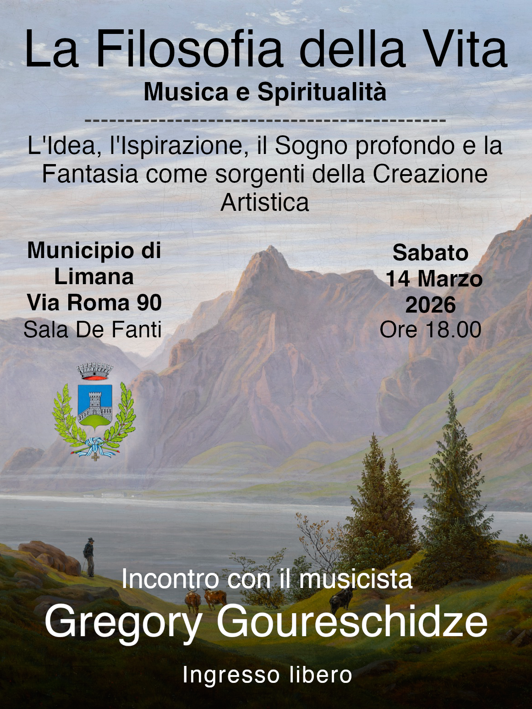
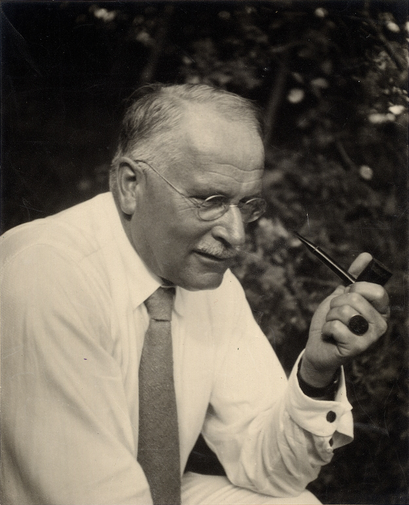
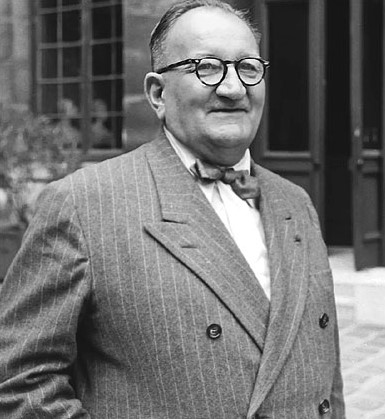
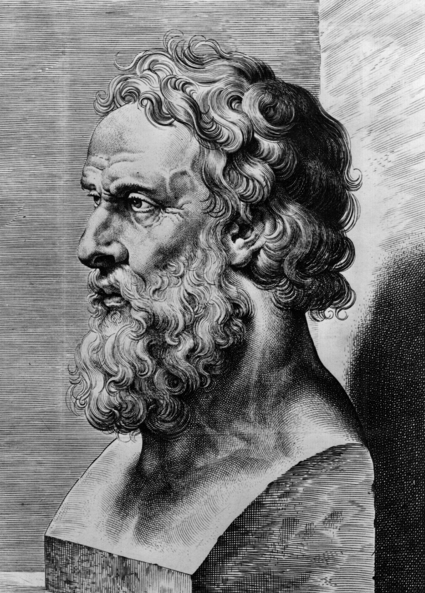
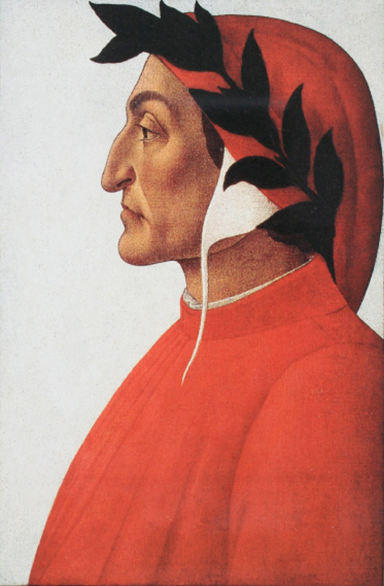
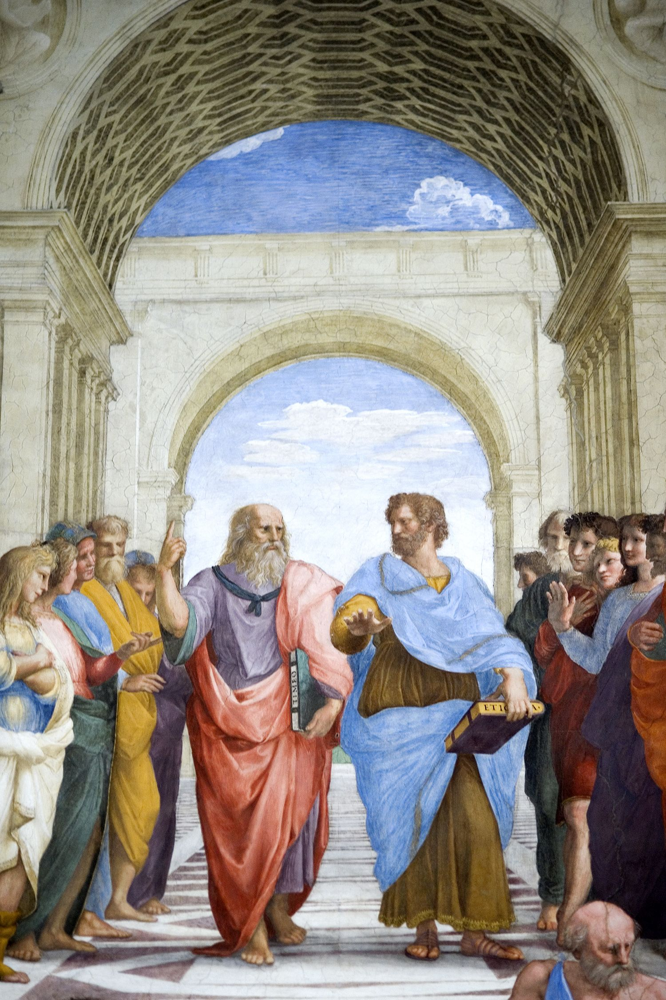
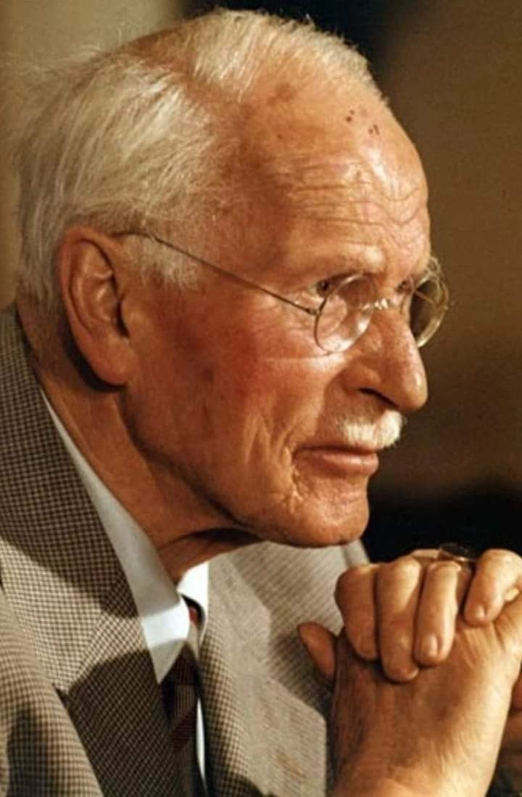

Conferenza Primavera 2026
La Filosofia della Vita
Che cos'è l'Arte?
L'Idea, l'Ispirazione, il Sogno profondo e la Fantasia come sorgenti della Creazione Artistica
Introduzione
In questo incontro si intende proseguire il percorso di riflessione già avviato nelle precedenti occasioni, volto alla ricerca dei principi originari dell’Arte attraverso lo studio e la lettura di testi fondamentali della tradizione filosofica, estetica e spirituale.
Nel corso della conferenza verrà presentata l’essenza dell’Arte e dell’atto creativo mediante l’esposizione di scritti di grandi filosofi, artisti e pensatori, al fine di chiarire che cosa si intenda realmente per Arte e da quali sorgenti profonde essa abbia origine. L’attenzione sarà rivolta all’Idea come modello eterno, all’ispirazione come contatto con il mondo interiore, al sogno come via di accesso alle profondità dell’anima e alla fantasia creatrice come facoltà capace di tradurre l’invisibile in forma sensibile.
Nell’epoca moderna l’Arte è spesso ridotta e deviata a espressione soggettiva, intrattenimento o semplice esercizio tecnico, perdendo il suo legame con la conoscenza, con l’ordine delle cose e con la dimensione spirituale dell’esistenza. Nelle civiltà antiche, al contrario, l’Arte era considerata un atto sacro, fondato su principi immutabili, capace di rendere visibile l’eterno nel tempo e di elevare l’anima verso ciò che è vero, buono e bello in sé.
Lo stato della nostra epoca
La definizione di Anima data dagli antichi
La concezione antica era che l'anima fosse essenzialmente la vita del corpo, il soffio vitale, una sorta di energia vitale immessa nel mondo fisico, ossia nella spazialità, durante la gravidanza o 8º all'atto della nascita o della concezione, e destinata ad abbandonare il corpo con l'ultimo respiro. L'anima è in sé e per sé un'essenza non spaziale; e poiché esiste prima e dopo l'essere corporeo, è pure fuor del tempo, ossia praticamente immortale.
L'etimologia della parola "Anima"
I nomi con i quali gli uomini esprimono le loro esperienze contengono spesso un'indicazione. Donde proviene la parola tedesca Seele (anima)? Seele, come l'inglese soul, è in gotico saiwala, corrispondente al germanico primitivo saiwalo, che etimologicamente viene avvicinato al greco aiólos = mobile, variopinto, iridescente.
La parola greca psyché significa, come è noto, anche farfalla. Sai-walô viene inoltre avvicinato al paleoslavo sila = forza. Tali rapporti gettano una qualche luce sul significato originario della parola Seele; essa è appunto forza motrice, forza vitale.
Il nome latino animus = spirito e anima = anima, corrisponde al greco ánemos = vento. L'altra parola greca che indica il vento, pneuma, significa pure, come è noto, spirito. In gotico incontriamo lo stesso etimo come us-anan = espirare, e in latino an-helare = respirare a fatica. Nell'antico alto-tedesco lo Spirito Santo fu tradotto con atum = respiro. In arabo si ha rih = vento, e ruh = anima, spirito. Simile parentela ha il greco psyché con psýcho = respirare, psýchos = fresco, psychrós = freddo e physa = mantice. Tali corrispondenze indicano chiaramente come in latino, in greco ed in arabo la denominazione dell'anima si connetta con la rappresentazione di un'aria mossa, di un "alito freddo". Si può quindi desumere che la concezione primitiva attribuiva all'anima un corpo aeriforme invisibile.
Poiché respirare è un segno della vita, si comprende senz'altro che il respiro - come il movimento e la forza motrice - sia stato assunto a indice di vita. Talora i primitivi assumono l'anima come fuoco o fiamma, perché anche il calore è segno di vita. Un'altra concezione primitiva, strana ma non infrequente, identifica l'anima col nome. Il nome dell'individuo è la sua anima; donde l'uso di dare ai nuovi nati nomi di antenati per incarnare in loro gli spiriti di quegli antenati. Questa concezione non è che il riconoscimento della coscienza dell'Io come espressione dell'anima. Spesso l’anima viene anche identificata con l'ombra: per cui è offesa mortale calpestare l'ombra di una persona. Pericoloso è quindi il mezzogiorno l'ora degli spiriti per i popoli meridionali), perché allora l'ombra si fa piccola, e ciò equivale a un pericolo di vita. L'ombra esprime ciò che i Greci indicavano con synopadós (= ciò che segue nello stesso tempo), senso di un' inafferrabile presenza vivente: per cui anche le anime dei defunti sono indicate come ombre.
Questi accenni ci mostrano come si sia sviluppata la concezione primitiva dell'anima. Lo psichico appare fonte di vita, primum movens, presenza spettrale ma obiettiva. Perciò per il primitivo è naturale parlare con la propria anima. Essa ha una voce in lui, giacché non è semplicemente lui stesso o la sua coscienza. Per l'esperienza primitiva l'elemento psichico non è, come per noi, il complesso di tutto ciò che è soggettivo e volontario, ma qualche cosa di obiettivo che vive e sta di per sé.

Il problema fondamentale della psicologia contemporanea
Tutto il Medioevo e così il mondo antico, e in genere l'umanità intera fin dalle sue origini, era partito dalla convinzione che esistesse un'anima sostanziale: solo a metà del secolo decimonono si venne costituendo una psicologia "senz'anima". Sotto l'influsso del materialismo scientifico tutto ciò che non poteva essere veduto con gli occhi o toccato con le mani apparve incerto, e anzi fu messo in dubbio come sospetto di metafisica; "scientifico", e quindi accettato senz'altro, rimaneva solo ciò a cui si poteva riconoscere carattere materiale o che poteva essere ricondotto a cause percepibili con i nostri sensi. In realtà questa trasformazione si era venuta preparando da lungo tempo, né aveva avuto inizio col materialismo.
Quando con la catastrofe spirituale della Riforma ebbe termine l'era gotica, tutta protesa verso le altezze, sviluppatasi su basi geografiche e filosofiche ristrette, anche la linea verticale dello spirito europeo fu tagliata dalla linea orizzontale della coscienza moderna: e la coscienza si sviluppò non più in altezza ma in larghezza, geograficamente come filosoficamente.
La fede nella sostanzialità di ciò che è spirituale cedette lentamente alla nuova persuasione che veniva sempre più affermandosi: quella della essenziale sostanzialità di ciò che è fisico; finché, dopo quasi quattro secoli, i pensatori e gli scienziati europei di punta giunsero a concepire lo spirito come del tutto dipendente dalla materia e da cause materiali.
Dire che questa radicale trasformazione sia stata provocata senz'altro dalla filosofia e dalle scienze naturali, sarebbe certamente inesatto; giacché ci sono sempre stati filosofi e scienziati intelligenti i quali, muovendo da un punto di vista superiore e da un pensiero più approfondito, reagirono e cercarono di opporsi a quell’irragionevole rovesciamento di posizione. Ma essi non godevano di molta popolarità, e la loro opposizione si rivelò impotente di fronte all'illogico dilagare della diffusa preferenza sentimentale per la realtà fisica. Né si creda che questo radicale capovolgimento nella concezione del mondo abbia avuto basi razionali; non vi è infatti in genere alcun argomento razionale che possa provare oppure confutare la realtà dello spirito o quella della materia. I due concetti - come ogni uomo intelligente se ne dovrebbe rendere conto - non sono che simboli posti a designare fattori ignoti, la cui esistenza può essere parimenti affermata o respinta, secondo il capriccio del temperamento individuale o dello "spirito del tempo”.
La sostituzione, operatasi nell'Ottocento, della metafisica dello spirito con una metafisica della materia, rappresenta dal punto di vista intellettuale un semplice giuoco di destrezza; dal punto di vista psicologico costituisce un'inaudita rivoluzione nella concezione del mondo. Ogni trascendenza si tramuta in immanenza: cause, fini e valori vengono ricercati e posti entro la stretta sfera del mondo empirico; nella sua ingenuità, l'intelletto umano ha l'impressione che il mondo interiore invisibile si faccia mondo esterno visibile, e soltanto i cosiddetti fatti conservano il loro valore.
Qualsiasi critica filosofica di tale capovolgimento irrazionale è destinata all'insuccesso, e tanto varrebbe rinunciarvi; giacché oggi la situazione è proprio questa: se uno cerca di ricondurre i fenomeni spirituali o psichici a pure funzioni glandolari, può essere certo di avere per sé l'attenzione e la stima del pubblico; mentre invece se volesse spiegare le scissioni atomiche della materia stellare come emanazione dello Spirito universale creatore, solleverebbe l'indignazione dello stesso pubblico come di fronte a un'anormalità spirituale. Eppure, logicamente e metafisicamente, le due spiegazioni si equivalgono: entrambe sono ugualmente arbitrarie e simboliche. Dal punto di vista gnoseologico è altrettanto legittimo far derivare l'uomo da una specie animale, come derivare la specie animale dall'uomo. Ma è noto che Dacqué è stato male accolto dalle sfere accademiche per aver peccato contro lo spirito del suo tempo. Con lo spirito del tempo non è lecito scherzare: esso è una religione, o meglio ancora una confessione, un credo, a carattere completamente irrazionale, ma con l'ingrata proprietà di volersi affermare quale criterio assoluto di verità, e pretende di avere per sé tutta la razionalità.
Lo spirito del tempo si sottrae alle categorie della ragione umana. Esso è un'inclinazione, una tendenza di origine e natura sentimentali, che agisce su basi inconsce esercitando una suggestione prepotente sugli spiriti più deboli e trascinandoli con sé. Pensare diversamente da come si pensa oggi genera sempre un senso di fastidio e dà l'impressione di cosa non giusta; può apparire persino una scorrettezza, una morbosità, una bestemmia, ed è quindi socialmente pericoloso per il singolo. Navigare contro corrente è follia.
Come tempo fa era presupposto evidente che tutto ciò che esisteva fosse nato dalla volontà creatrice di un Dio spirituale, così il secolo decimonono scoperse la verità, altrettanto evidente, che tutto proviene da cause materiali. Oggi non è più la forza dello spirito che si crea un corpo, ma al contrario la materia che trae dal proprio chimismo un'anima. Un tale capovolgimento farebbe ridere se non ci trovassimo al cospetto di una delle grandi verità dello spirito del tempo. Pensare in questo modo è popolare, e quindi corretto, ragionevole, scientifico e normale a un tempo. Lo spirito deve essere pensato come un epifenomeno della materia; e tutto confluisce in questa conclusione, anche se non si parla proprio di "spirito" ma di "psiche", non di "materia" ma di "cervello" e di "ormoni" o di istinti e di impulsi. L'attribuire all'anima una propria sostanza sarebbe contrario allo spirito del tempo, e quindi un’eresia.
Quanto più ho cercato nel corso degli anni di approfondire questo problema, tanto più si è accentuata in me l'impressione del-l'unilateralità morbosa della moderna educazione umana. È certamente giusto aprire gli occhi e gli orecchi dei giovani di fronte all'ampio mondo, ma pensare che con ciò i giovani siano veramente preparati alla vita, è una follia incredibile. Una tale educazione arriva a rendere possibile un adattamento esterno al mondo reale; ma nessuno pensa all'adattamento al Sé, alle forze dell'anima, la quale trascende immensamente quanto di più potente esista nel mondo. Eppure vi è ancora un sistema educativo, derivato in parte dall'Evo antico, in parte dal primo Medioevo: intendo la Chiesa cristiana. Ma non si può certo negare che il Cristianesimo nel corso dei due ultimi secoli ha perduto, come il Confucianesimo e il Buddhismo in Cina, gran parte della sua efficacia educativa. Non ne ha colpa la cattiveria degli uomini, ma la progressiva e generale trasformazione spirituale, di cui il primo sintomo è stata proprio la Riforma. Con essa fu scossa l'autorità educativa e si è dato inizio al processo che doveva minare il principio di autorità. Ne derivò inevitabilmente l'accentuarsi dell'importanza dell'individuo, di cui sono massima espressione i moderni ideali di umanità, di benessere sociale, di democratica eguaglianza dei diritti. Ma l'accentuata tendenza individualistica dell'ultima nostra fase evolutiva ha determinato a sua volta l'inizio di un ritorno compensatorio all'uomo collettivo, la cui autorità è per ora costituita dal peso della massa.
Niuna meraviglia quindi se oggi incombe quasi un senso di catastrofe, come se si fosse messa in moto una valanga che nessuno è in grado di arrestare. L'uomo collettivo minaccia di soffocare l'individuo, quel singolo a cui in definitiva si deve ogni opera umana.
La massa come tale è sempre anonima e irresponsabile, e i cosiddetti condottieri non sono che i sintomi inevitabili di un movimento di massa. I veri condottieri sono coloro che meditano su sé stessi, e alleggeriscono almeno del proprio peso il peso della massa, poiché si tengono coscientemente lontani dalla cieca naturalità della mobile massa.
Ma chi può sottrarsi a quella forza di attrazione che sopraffà ogni cosa quando l’uno si aggrappa all’altro e l’uno trascina con sé l’altro? Solo chi non sta solo nel mondo esteriore, ma anche in quello interiore.
Piccola e nascosta è la porta che si apre verso l'interno; innumerevoli i pregiudizi, i presupposti, le opinioni, i timori che ne vietano l'accesso. Si vuol sentir parlare di grandi programmi politici ed economici; ossia proprio di quelle cose che hanno condotto i popoli a impantanarsi nella situazione attuale; ed ecco che uno viene a parlare di porte nascoste, di sogni e di mondo interiore. Tutto ciò è ridicolo: che cosa crede di ottenere questo nebuloso idealismo di fronte a un gigantesco programma economico, di fronte ai cosiddetti problemi della realtà?
Ma io non parlo alle nazioni; io mi rivolgo solo ad alcuni pochi uomini, per i quali vale come verità certa che le realtà del nostro mondo civile non cadono dal cielo, ma sono in ultima analisi opera di noi uomini singoli. Se le cose grandi vanno male, è solo perché i singoli vanno male, perché io stesso vado male. Perciò per essere ragionevole dovrò cominciare col giudicare me stesso. E poiché l'autorità non mi dice più nulla, io ho bisogno di una conoscenza delle intime radici del mio essere soggettivo, per poter collocare sopra i fatti eterni dell'anima umana le mie basi.
Se ho parlato soprattutto del sogno, l'ho fatto soltanto perché volevo accennare a uno dei punti di partenza più semplici e noti dell'esperienza interiore. Oltre al sogno ve ne sono molti altri, ai quali non posso qui riferirmi. Scavando nelle profondità dell'anima, si rinvengono molte cose di cui alla superficie forse si sognava soltanto. Non deve quindi stupire se talora viene scoperta anche quella che è la più forte e spontanea fra le attività spirituali, ossia quella religiosa! Nell'uomo moderno essa è repressa e sepolta ancor più che la sessualità e l'adattamento sociale. Ci sono perciò persone per le quali l'incontro interiore con una forza estranea rappresenta un'esperienza alla quale dànno il nome di "Dio". Anche “Dio”, considerato in questo senso, è una teoria, una forma di rappresentazione, un'immagine che lo spirito umano costruisce nella sua limitatezza, per esprimere un'esperienza impensabile e ineffabile.
L'esperienza è l'unica realtà che non si possa annullare con le discussioni, laddove le immagini sono corruttibili e soggette alla distruzione.
Nomi e parole sono poveri involucri, eppure conservano un qualche valore indicativo per la natura dell'esperienza. Quando al diavolo si dà il nome di nevrosi, ciò prova che quell'esperienza demoniaca è oggi sentita come una malattia: e ciò è caratteristico per l'epoca nostra. Se la si chiama "repressione della sessualità", o "impulso di affermazione del proprio Io", ciò indica che essa turba profondamente quegli istinti fondamentali. Se la si chiama Dio, ciò indica che si vuole esprimerne il profondo valore universale, perché si è appunto sperimentato un tale valore. A considerare le cose spassionatamente, l'ultima denominazione, col suo riferimento allo sfondo inconoscibile, è la più prudente e insieme la più modesta, poiché lascia la maggior indeterminatezza all'esperienza concreta e non la costringe entro i limiti artificiali di schemi concettuali; a meno che a qualcuno venga l'idea di sapere esattamente che cosa sia Dio.
Ma comunque si voglia designare ciò che sta in fondo all'anima, certo è che esso esercita un'influenza inaudita sull'essere e sulla natura della coscienza: e tanto maggiore è una tale influenza quanto meno ne siamo coscienti.
La nostra coscienza "di testa" è un attore che ha dimenticato che rappresenta una parte. Ma quando lo spettacolo è terminato, l'attore deve essere in grado di ricordare quella che è la sua realtà soggettiva: non può continuare a vivere come Giulio Cesare o come Otello, ma deve riprendere la personalità sua propria, che una momentanea illusione della coscienza gli aveva reso estranea. Egli deve rendersi conto che è stato soltanto una figura sul palcoscenico, che stava recitando un dramma di Shakespeare, che esistono un regista e un direttore di teatro, i quali hanno da dire prima o poi cose essenziali intorno alla sua recitazione.

Sulla decadenza dell'epoca moderna
La nostra epoca è molto dura nei confronti di tutte le virtù che richiedono una certa durata. Essa sprona, minaccia, sgomenta; non sopporta più che si consumino vent'anni per cercare di vivere per dei secoli. Il lavoro di puro esercizio, senza speranza di frutti immediati, la lunga preparazione di se stessi, lontani dal mondo, la volontà di sottomissione a delle costrizioni che sembrano inutili o sono fastidiose ci sono divenuti impossibili e insopportabili.
Nei tempi in cui il tempo non costava nulla, poteva esistere un ideale di perfezione, vale a dire di compimento delle opere, grazie al quale esse evitavano l'accusa d'impotenza e dimostravano che l'artista era giunto al punto di avere il pieno possesso di se stesso, cost come della sua arte, in cui la soluzione dei problemi più difficili e la manifestazione della sua personalità e anche della sua singolarità non erano affatto valori opposti, come si crede oggi. Esse, al contrario, si esaltavano vicendevolmente. Più so, più sono. Ecco ciò che tutti i maestri fanno dire a tutte le loro grandi opere.
Queste opere reggevano a un lungo esame. Valeva la pena di copiarle. Non si pensava ancora che il disegno o l'arte di scrivere, grazie a un privilegio del tutto speciale, fossero dispensate da ciò che esige ogni altra attività, volta al raggiungimento di qualche maestria dei nostri mezzi naturali. Il pianoforte, la mistica stessa richiedono anni di formazione, le lungaggini, i rifacimenti, la noia, le amarezze caratteristiche di ogni apprendistato.
Insomma, la parola SAPERE un tempo aveva un significato nelle arti e non lo ha più.
So bene ciò che si dice e che più d'uno si vanta di trascurare ciò che non fa. Tuttavia, nessuno in cuor suo nega che la pratica prolungata di un'arte ci insegna qualcosa, e si tratta allora di sapere se questa acquisizione non porti più sicuramente e rapidamente verso il fine, attraverso esercizi ben definiti e una disciplina i cui risultati siano verificabili, che non l'affidarsi alla casualità di imprese successive, premature, mosse dall'ambizione di creare e di produrre al più presto, prima del tempo.
Che cos'è l'Arte?
L'etimologia della parola "Arte"
Quali sono le opere d'arte e quanti ne sono i generi? Il disaccordo si presenta subito, fin dall'inizio della discussione.
Le cause sono molteplici, ma una delle principali sembra essere una confusione, intenzionale o meno, tra il significato della parola “arte" nell'espressione "belle arti" e quello che le diamo quando la utilizziamo come un equivalente di “tecnica". Non bisogna d'altro canto forse parlare qui di confusione, perché il francese “art” riprende il latino “ars” che a sua volta corrisponde, in quanto al significato, alla parola greca da cui abbiamo derivato tecnica. Tutta la tecnica è un'arte e quando la intendiamo in questo senso, la parola evoca inevitabilmente la definizione dell'arte usata dagli scolastici: “recta ratio factibilium”. L'espressione suggerisce la nozione di una regola operativa per far bene qualche cosa.
Ora, è certo che tutta l'arte del bello comporta delle regole di questo tipo; vi è una tecnica o, più semplicemente, un “saper fare” in ciascuna delle arti il cui fine è produrre degli oggetti. Coloro che si propongono di produrre degli oggetti, mirando alla loro bellezza, sono gli unici a creare degli oggetti che hanno il diritto di essere definiti belle arti, ma succede, di fatto, che delle tecniche, utilizzate a fini diversi dalla produzione del bello, finiscano surrettiziamente nel quadro generale delle belle arti. Donde delle confusioni che forse non sono del tutto evitabili.

La distinzione fra le arti e le Belle Arti
Istruzioni e abilità non sono mai sufficienti, ma sono sempre necessarie; le doti naturali più eccezionali, il genio più elevato non dispensano in nessuna arte dal saper fare e dall’abilità.
Includere le tecniche del fare nelle arti di fare il bello non autorizza a confonderle. Ci si guarderà quindi dalla tendenza a classificare tra le belle arti una semplice perfezione nella realizzazione di una tecnica qualsiasi e nei risultati che essa ottiene, perché il risultato è comunque sempre bello, ma non ne consegue che l'arte che lo produce sia una delle belle arti. Sbagliando, a quanto pare, si è voluto includere in un sistema di belle arti il ballo di sala, l'equitazione, la scherma, l'acrobazia e persino le sfilate militari. In effetti vi è dell'arte e del bello nei movimenti di colui che definiamo un buon ballerino, nel modo in cui un buon cavaliere sta in sella o semplicemente cavalca, come ve n'è in una buona sfilata militare o in un movimento ginnico eseguito con disinvoltura, precisione e grazia. Non ve n'è di meno, del resto, nei movimenti del falegname, del fabbro, dell'aratore e del seminatore.
Generalmente parlando, non si può restare insensibili a quel tanto di arte che vi è nella pratica di tutti gli sport, che impongono al corpo la disciplina e il ritmo necessari alla buona esecuzione dei movimenti.
Tuttavia, benché il suo risultato sia bello, il fine di questa disciplina non è mirare alla bellezza. Danzare bene, suonare bene, sapersi comportare bene in società sono delle arti di ciò che si fa e il cui fine è la perfezione di ciò che si è. Una buona sfilata militare è una bella sfilata, ma i suoi fini sono sempre la disciplina, l'affermazione dell'ordine, il controllo della truppa che riguardano innanzitutto la guida dell'esercito. Non si tratta lì di attività di un'arte il cui fine è la bellezza.
Definizione delle Belle Arti
Belle arti, vale a dire di tutte quelle che, secondo lo stesso uso linguistico, hanno per oggetto “la rappresentazione del bello in sé”.
L'Origine dell'Arte
Le arti dipendenti dal disegno hanno avuto origine, come tutte le invenzioni, dalle cose necessarie; in seguito si manifestò in esse una ricerca della bellezza alla quale seguì infine il superfluo: sono questi i tre stadi principali dell'arte.
Da notizie antichissime sappiamo che le prime figure rappresentavano l'uomo quale egli è e non come ci appare, il suo ambito di vita e non il suo aspetto. Dalla semplice figura si passò ad uno studio dei rapporti, e questo insegnò l'esattezza, a quale, a sua volta, conferì la sicurezza necessaria per cimentarsi nelle cose grandi: l'arte raggiunse così la grandezza e infine, presso i Greci, gradualmente la più alta bellezza. Dopo aver armonizzato tra loro tutti gli elementi della bellezza, si ricercò quanto potesse adornarla, si cadde nel superfluo, e andò così perduta quella grandezza a cui l'arte era pervenuta, e a questo seguì infine la sua completa decadenza.
Le esigenze dell'Arte
Ogni scultore sa che cosa vuol dire per una statua essere scultura pura; ogni musicista riconosce subito il suono di una musica pura; ogni poeta, se lo è veramente, percepisce a colpo sicuro il suono di una poesia pura, in Racine o in La Fontaine, cosi come in Mallarmé. L'arte è impietosa con coloro che la praticano; le buone intenzioni non hanno alcun valore, conta solo il risultato e la sola cosa che si possa dire è che la fedeltà all'essenza della sua arte conferisce sempre a un'opera quale che sia una dignità particolare che, se l'opera è bella, non può che nobilitare la sua bellezza
Ogni opera d’arte ha la sua poetica speciale in virtù della quale è fatta e sussiste.
Ciò che mi sembra bello, quello che vorrei fare, è un libro sul nulla, un libro senza correlato esteriore, come la terra che si tiene nell’aria senza appoggiarsi, un libro che non avrebbe quasi soggetto, o in cui il soggetto almeno sarebbe pressoché invisibile, se questo è possibile.
L'opera d'arte è un tentativo verso l'unico; s'afferma come un tutto, come un assoluto; e, nello stesso tempo, fa parte d'un sistema di relazioni complesse.
È il risultato d'un'attività indipendente; traduce un sogno alto e libero; ma in essa si vedono anche convergere le energie della civiltà. Infine è materia e spirito, è forma e contenuto.
Coloro che si danno a definirla, la qualificano secondo i bisogni della loro natura e le particolarità delle loro ricerche. Colui che la produce, quando si fermi a considerarla, si pone su un piano diverso da colui che la commenta e, se si serve degli stessi termini, li usa in un altro senso. Colui che profondamente ne gode e che, forse, è il più raffinato e il più saggio, l'ama per ciò che è essa stessa: crede di raggiungerla, di possederla nella sua essenza - e l'involge nella rete delle proprie fantasie. Essa è immersa nella mobilità del tempo, ed appartiene all'eterno. È particolare, locale, individuale, ed è un testimone universale. Eppure essa signoreggia le sue diverse accezioni e, sebben giovi ad illustrare la storia, l'uomo e lo stesso mondo, è creatrice dell'uomo, creatrice del mondo, e immette nella storia un ordine che non è riducibile a null’altro.
E cotesto è un aspetto della sua vita immortale; se così ci si può esprimere, è l'eternità del suo presente. Ma volendo far servire l'opera d'arte a scopi particolari, la si destituisce della sua antica dignità, le si toglie il privilegio del miracolo.
Ciò da cui l'Arte si distingue
Con la definizione di intuizione lirica o intuizione pura, l'arte viene implicitamente distinta da tutte le altre forme di produzione spirituale.
1) L'arte non è filosofia, perché filosofia è pensamento logico delle categorie universali dell'essere, e l'arte è intuizione irriflessa dell'essere; e perciò, laddove la prima oltrepassa e risolve l'immagine, l'arte vive nella cerchia di questa come in suo regno. Si dice che l'arte non può comportarsi in guisa irrazionale né prescindere dalla logicità; e certamente essa non è né irrazionale né illogica: senonché la sua propria ragione e logica è affatto diversa da quella dialettico-concettuale, e, appunto per dare risalto alla sua peculiarità e originalità furono ritrovati i nomi di Logica "sensitiva" o di “Estetica”.
2) L'arte non è storia, perché la storia importa critica distinzione tra realtà e irrealtà, realtà di fatto e realtà d'immaginazione, realtà di azione e realtà di desiderio; e l'arte è di qua da tali distinzioni, vivendo, come si è detto, di pure immagini. Anche qui si è obiettato che all'arte non è estraneo il criterio storico, e che essa osserva la legge del "verosimile"; ma, anche qui, il “verosimile" è nient'altro che una poco felice metafora per designare la coerenza tra loro delle immagini.
3) L'arte non è scienza naturale, perché la scienza naturale è realtà storica classificata e resa astratta; né è scienza matematica, perché la matematica opera con le astrazioni e non contempla.
4) L'arte non è gioco d'immaginazione, perché il gioco d'immaginazione passa d'immagini in immagini, spinto dal bisogno della varietà, del riposo, dello svago, d'intrattenersi nelle parvenze di cose piacenti o di affettivo e patetico interesse; laddove nell'arte l'immaginazione è tanto infrenata dall'unico problema di convertire il tumultuoso sentimento in chiara intuizione, che si è sentita più volte l'opportunità di non chiamarla "immaginazione", ma "fantasia", fantasia poetica o fantasia creatrice. L'immaginazione in quanto tale è estranea alla poesia.
5) L'arte non è il sentimento nella sua immediatezza. Certo anche i sentimenti nella loro immediatezza si esprimono, come si suol dire, perché, se non si esprimessero, se non fossero al tempo stesso fatti sensibili e corporali ("fenomeni psicofisici", come li chiamavano i positivisti e neocritici), non sarebbero cose concrete, cioè non sarebbero punto. Ma cotesta " espressione" ancorché accompagnata da coscienza, scende anch'essa al grado di semplice metafora quando la si ragguaglia alla "espressione spirituale" o "estetica", che sola veramente esprime, cioè dà forma teoretica al sentimento e lo converte in parola e canto e figura. In questa differenza del sentimento contemplato o poesia rispetto al sentimento agito o sofferto, sta la virtù che si è attribuita all'arte di "liberatrice dagli affetti" e di "serenatrice" (catarsi); e la congiunta condanna estetica di quelle opere o di quelle parti di opere d'arte in cui il sentimento immediato irrompe o si sfoga. Anche da questa differenza deriva l'altro carattere (che è poi sinonimo, al pari del precedente, dell'espressione poetica), la sua "infinità" contrapposta alla finità del sentimento o della passione immediata: il che si chiama anche il carattere “universale" o "cosmico" della poesia. In effetto il sentimento, non vissuto nel suo travaglio ma contemplato, si vede diffondersi per larghi giri in tutto il dominio dell'anima, che è il dominio del mondo, con infinite risonanze: gioia e affanno, piacere e dolore, forza e abbandono, serietà e levità, e via dicendo, si legano in esso l'uno all'altro, e l'uno trapassa, con gradazione di sfumature, nell'altro: sicché ciascun sentimento, pure serbando la sua individuale fisionomia e il suo motivo originario e dominante, non si restringe ed esaurisce in se stesso. Una immagine comica, se è poeticamente comica, porta con sé qualcosa che non è comico, come si osserva in Don Quijote o in Falstaff: e un'immagine di cosa terribile non è mai, in poesia, senza qualche conforto di elevazione, di bontà e di amore.
6) L’arte non è didascalica o oratoria, arte oltrepassata e asservita e limitata da un intento pratico, quale che esso sia, così quello d'introdurre negli animi una certa verità filosofica, storica o scientifica, come l'altro di disporli a un certo particolare sentire e alla corrispondente azione. Tutt'insieme, l'oratoria toglie all'espressione l'infinità" e l'indipendenza, e, facendola mezzo per un fine, la dissolve in questo fine. Da ciò il carattere che fu chiamato (dallo Schiller) "indeterminante" dell'arte, contrapposto a quello dell'oratoria che è di "determinare o di "muovere". Da ciò, tra l'altro, la giustificata diffidenza verso la poesia "politica" (poesia politica, cattiva poesia): quando, ben s'intende, resti "politica" e non assurga a serena e umana poesia.
7) L'arte, come non si confonde con quella forma di azione pratica che par le sia più vicina, la didascalica e l'oratoria, così, e a più forte ragione, con nessuna delle altre forme di azione, intese a produrre certi effetti di piacere, di voluttà e di comodo, o, anche, di virtuosa disposizione e di pio fervore. Non solo le opere meretricie debbono essere schivate nell'arte, ma anche quelle mosse da sollecitudine di bene, del pari, sebbene diversamente, inestetiche e perciò respinte dagli amatori di poesia.

L'Idea della Bellezza in sè
L'essenza delle cose, l'Idea del Bene e del Bello in sè, l'Idea in sè
Non mi risulta che un corpo in buona forma possa rendere buona l'anima in grazia della propria virtù; viceversa, un'anima buona, per la sua stessa virtù, può perfezionare il corpo in misura straordinaria!
Sarebbe già un'adeguata difesa il sostenere che chi ama il sapere dev’essere per natura proteso verso l'essere, non perdendosi dietro alla molteplicità dei particolari che è oggetto di opinione, ma andandosene dritto per la sua via, senza tentennamenti, senza desistere dal suo amore, finché non abbia colto nella sua essenza l'essere di ciascun oggetto particolare con quella facoltà dell'anima che è destinata a comprendere una tale realtà.
«Nel mondo delle realtà conoscibili l'Idea del Bene viene contemplata per ultima e con grande difficoltà. Tuttavia, una volta che sia stata conosciuta non si può tare a meno di dedurre, in primo luogo, che e la causa universale di tutto ciò che è buono e bello - e precisamente, nel mondo sensibile, essa genera la luce e il signore della luce, e in quello intelligibile procura, in virtù della sua posizione dominante, verità e intelligenza - e, in secondo luogo, che a essa deve guardare chi voglia avere una condotta ragionevole nella sfera pubblica e privata!»
«Sono d'accordo con te - ammise -, almeno nella misura in cui mi riesce di seguirti».
«Allora - aggiunsi io -, concordi con me che non vi sia nulla di strano che persone che si sono elevate fino a tali vertici non vogliano più impegnarsi in imprese umane, ma che nel loro animo siano attratte e sollecitate a tornare lassù. E ciò è perfettamente logico, se ci si deve attenere alla metafora sopra illustrata».
«Certo, è logico», convenne!
«Come già dall'inizio avevamo concordato, il sapere di primo grado lo chiameremo scienza, quello di secondo dia noia - cioè conoscenza mediana -, quello di terzo credenza e quello di quarto congettura: di queste, le ultime due forme le chiameremo opinione e le prime due intellezione. Inoltre, siamo anche d'accordo sul fatto che l'opinione ha per oggetto il mondo del divenire, e l'intellezione il mondo dell'essere, talché, come questi due mondi stanno fra di loro, così l'intellezione sta all'opinione; e come l'intellezione sta all'opinione così la scienza sta alla credenza e la conoscenza mediana alla congettura».
«Chi non è capace di definire l'Idea del Bene? con il ragionamento astraendola da tutte le altre, e come in battaglia passando attraverso tutte le prove con l'intenzione di provarla non secondo opinione ma secondo l'essenza non affronti queste cose con un ragionamento che non crolla, tu dirai che chi si trova in tale condizione non conosce né il Bene in sé né nessun'altra cosa buona; ma che se anche ne apprenda una qualche immagine, non dirai forse che la coglie con l'opinione e non con la scienza, e che dormendo e sognando in questa vita, prima di potersi risvegliare qui, finirà con l'addormentarsi di nuovo, e scendendo nell'Ade terminerà il suo sonno?»
«Per Zeus! - esclamò - dirò davvero tutto questo».
L'idea in Cicerone
Secondo me nulla vi è, in nessun genere, di tanto bello che il suo originale - come il modello per rapporto al ritratto, - non sia più bello ancora: ma questo originale noi non possiamo percepire né con l'occhio né con l'orecchio né con alcun altro senso, ma solo mediante Io spirito ed il pensiero. Perciò possiamo immaginare tal cosa, che superi in bellezza le stesse sculture fidiache, le più perfette nel loro genere, ed anche le pitture già menzionate; giacché, quando l'artista creava lo Zeus o l'Atena, non contemplava alcun uomo (reale) che potesse ritrarre, ma abitava il suo spirito una eccelsa forma di Bellezza: questa egli contemplava, secondo quel modello dirigendo a mano e l'arte. Come dunque nelle arti figurative v'è qualcosa di compiuto e di eccellente alla cui forma ideale si riferiscono, nell'imitazione artistica, quelle cose che non cadono sotto il controllo dei sensi (ossia gli enti divini da ritrarre), allo stesso modo vediamo le forme della perfetta eloquenza solo con lo spirito, e con le orecchie ne abbiamo soltanto la copia. Tali forme delle cose, Platone, quel sommo scrittore e maestro, non del pensare soltanto ma anche del dire, chiamava "Idee"': egli nega la loro temporalità e ne afferma il carattere eterno, poiché le ritiene fondate nella ragione e nel pensiero. Tutto il rimanente nasce e muore, si trasforma e passa, non rimanendo mai in un solo e medesimo stato.
Ciò che è - Considerazioni sulla dottrina dell'Idea di Platone
Platone usa questo termine in sei diversi significati, mi ha detto oggi quel nostro amico, uomo dottissimo.
Te li esporrò tutti, ma prima voglio spiegarti che c'è una cosa chiamata «genere», e c'è anche la “specie”. Per ora cerchiamo quel genere primo da cui dipendono tutte le specie, da cui ha origine ogni divisione, e che comprende tutte le cose. Lo troveremo, se risaliremo di cosa in cosa fino al genere primo.
L'uomo è una specie, come dice Aristotele; il cavallo è una specie, il cane è una specie. Bisogna dunque cercare un vincolo comune a tutte queste specie, che le abbracci e le tenga sotto di se. Qual è? Il genere animale.
Così abbiamo il genere di tutte le specie già menzionate: uomo, cavallo, cane. Ma ci sono cose che, pur avendo la vita, non sono animali. Si è d'accordo, infatti, che anche nelle piante c'è un principio vitale, per cui diciamo che vivono e muoiono. Dunque, gli esseri animati terranno il primo posto e comprenderemo in questa classe sia gli animali che le piante. D'altra parte, alcune cose sono prive di vita, come, per esempio, le pietre. C'è, perciò, una categoria anteriore a quella degli esseri animati: quella dei corpi. Io la suddividerò dicendo che tutti i corpi sono animati o inanimati. Ma c'è ancora qualcosa al di sopra dei corpi, poiché noi distinguiamo le cose corporee da quelle incorporee.
Quale sarà, dunque, il principio da cui derivano questi due gruppi? Quello che, poco fa, abbiamo impropriamente chiamato “ciò che è”. Dividendolo in due specie, noi diremo: “ciò che è” può essere corporeo o incorporeo. Ecco, dunque, il genere primo, preesistente, e, per cosi dire, generale. Tutti gli altri sono bensì generi, ma speciali, come il genere uomo. Esso comprende, come sue specie, i vari popoli: Greci, Romani, Parti; i vari colori delle razze: bianchi, neri, biondi; i singoli individui: Catone, Cicerone, Lucrezio. In quanto comprende in sé molti esseri, è genere; in quanto è subordinato a un altro genere, è specie. Ma il genere “ciò che è” e generale e non ha niente sopra di sé: è il principio di tutte le cose, e tutto gli è subordinato. Gli stoici vogliono sovrapporgli ancora un altro genere più essenziale: ne parlerò subito dopo, quando avrò stabilito che quel genere di cui ho parlato, a buon diritto è considerato il principale, poiché comprende tutte le cose. “Ciò che è” lo divido nelle due specie corporea e incorporea. Non esiste una terza specie. I corpi li dividiamo in animati e inanimati. Come divideremo, poi, gli esseri animati?
Diremo che alcuni hanno l'anima; altri hanno soltanto un principio vitale; o meglio: alcuni si muovono per proprio impulso, avanzano, si spostano; altri, stando fissi al suolo, si sviluppano traendo nutrimento dalle radici. E in quante specie posso dividere gli animali?
Essi sono o mortali o immortali. Ma per certi stoici il genere primo è un “qualcosa”. Ed ecco il motivo di questa opinione. “Nella natura” essi dicono “alcune cose esistono, altre non esistono. Ora, la natura abbraccia anche queste cose non esistenti, che vivono nell'immaginazione, come i Centauri e i Giganti, e tutte quelle cose create da un errore della nostra mente, che hanno assunto un qualche aspetto, per quanto prive di sostanza”.
Ora torno alla spiegazione che ti ho promesso, come cioè Platone distingua la totalità degli esseri in sei categorie. Quel primo elemento chiamato “ciò che è” non può essere percepito né dalla vista, né dal tatto, né da alcun senso: è solo pensabile. Ciò che è in forma generale, come, ad esempio, l'uomo preso nel suo genere, non è percepito dagli occhi; è percepibile solo un uomo individualmente considerato, come, ad esempio, Cicerone e Catone. Il genere animale non è veduto; è solo pensato. Ma si possono vedere le specie dell'animale, come un cavallo o un cane.
Nella seconda categoria Platone pone l'essere che sovrasta e domina tutto, e lo chiama l'Essere per eccellenza. Si dice comunemente: un poeta, e tale termine indica tutti coloro che compongono versi. Ma già presso i Greci questo nome passo a significare uno solo; e quando senti parlare del Poeta, intendi Omero. Chi è, dunque, questo Essere? E certamente dio, il più grande e il più potente di tutti gli esseri.
La terza categoria è quella degli esseri che hanno una esistenza propria: sono innumerevoli, ma non sono visibili ai nostri occhi. Mi chiedi che cosa siano? Sono una caratteristica del sistema di Platone. Egli li chiama “idee”: da esse hanno origine, formate a loro immagine, tutte le cose che vediamo. Sono immortali, immutabili, inviolabili. Ora ascolta che cos'è l'idea, cioè che cosa essa è per Platone. L’idea è l'esemplare eterno di tutte le cose che nascono in natura”. Alla definizione, perchè appaia più chiara, aggiungerò una spiegazione.
Voglio fare il tuo ritratto: ho, come modello, te, di cui la mia mente coglie un aspetto che vuol fissare nell’opera: quella figura che mi guida e mi ammaestra, e da cui traggo la mia imitazione, è l'idea. Ebbene, la natura ha tali modelli in numero infinito: uomo, pesce, albero; e a loro immagine foggia tutte le cose che essa deve creare.
L'idos occupa il quarto posto. Se vuoi capire che cosa sia quest'idos, sta bene attento a non attribuire a me, ma a Platone, la difficoltà di questo concetto. Del resto, nessuna sottigliezza è senza difficoltà. Poco fa ho fatto l'esempio del pittore: egli, volendo rappresentare Virgilio con i suoi colori, doveva osservarlo attentamente. L'idea era la figura di Virgilio, modello dell'opera futura.
Quella che l'artista ha trasferito nella sua opera, traendolo dal suo modello, è l'idos. Mi chiedi: “In che consiste la differenza”? L'idea è il modello; l'idos è la forma tratta dal modello e fissata nell’opera. L'artista imita la prima, e crea la seconda. La statua presenta una certa figura: questa è l'idos. Il modello stesso, guardando il quale lo scultore ha foggiato la statua, presenta anch'esso una certa figura: questa è l'idea. Se desideri ancora un'altra distinzione, dirò che l'idos è nell'opera, mentre l'idea è non solo fuori dell'opera, ma prima dell’opera.
La quinta classe comprende gli esseri che esistono comunemente: questi cominciano a riguardarci direttamente. In essa è compreso tutto: uomini, animali, cose. la categoria delle cose che hanno una quasi esistenza, come lo spazio ed il tempo.
Platone non annovera le cose visibili e palpabili fra gli esseri ai quali attribuisce un'esistenza propria; infatti esse scorrono e continuamente diminuiscono e crescono. Nessuno di noi nella vecchiaia è lo stesso uomo che fu nella giovinezza; nessuno di noi è oggi quello che fu ieri.
I nostri corpi vengono portati via come le acque del fiumi. Tutto quello che vedi corre al ritmo del tempo: nessuna delle cose che vediamo è stabile. Io stesso, mentre dico che queste cose mutano, sono mutato. Questo dice appunto il motto di Eraclito: “Non possiamo discendere due volte nello stesso fiume”. Il nome del fiume è sempre lo stesso, ma l'acqua è scivolata via.
Questo cambiamento in un corso d'acqua è più manifesto che nell'uomo, ma la corrente che porta via anche noi non e meno rapida. E perciò mi meraviglio della nostra stoltezza, che ci fa amare una cosa cosi fugace, il corpo, e ci fa temere che un giorno morremo, mentre ogni momento è la morte della precedente condizione di vita.
Non devi temere che avvenga una volta ciò che avviene ogni giorno. Ho parlato dell'uomo, materia fragile e caduca e soggetta a tutti i malanni. Ma anche il mondo, eterno e indistruttibile, ha i suoi cambiamenti e non rimane mai lo stesso. Per quanto conservi in sé tutti gli elementi primitivi, li conserva in modo diverso dal loro stato iniziale: ne cambia l'ordine.
Ciò che rende buono un musicista
“Quello che è buono rende gli uomini buoni; infatti, anche nel campo musicale, quello che vi è di buono forma il musicista. I doni della fortuna non rendono gli uomini buoni; dunque non sono beni”.
I peripatetici obiettano che la prima proposizione è falsa: “Quello che è buono non sempre fa che un uomo sia buono. Nella musica vi è qualcosa di buono come il flauto, la lira e qualche altro strumento per accompagnare il canto: tuttavia, nessuno di questi forma il musicista”.
Rispondiamo: “Voi non avete capito che cosa intendiamo per buono nel campo musicale. Non vogliamo dire gli strumenti del musicista, ma quello che lo rende musicista. Tu, invece, mi vieni a parlare della suppellettile dell'arte, non dell'arte stessa. Se dunque in quest'arte vi è qualcosa di buono, esso è quello che forma il musicista”. Voglio spiegarmi meglio: nella musica la parola “buono” può avere due significati, secondo che una cosa giovi all'esecuzione musicale, o giovi all'arte.
I mezzi meccanici, il flauto, la lira ed altri strumenti, si riferiscono all'esecuzione, ma non riguardano l'arte in se stessa. Infatti l'artista è tale anche senza gli strumenti, sebbene non possa forse esercitare la sua arte. Questo doppio significato manca quando si parla dell'uomo: il bene è identico sia nell'uomo, sia nella sua vita.
La dottrina degli Stoici, Aristotele e Platone
Come sai, i nostri Stoici affermano che in natura esistono solo due cose dalle quali deriva tutto: la causa e la materia. La materia giace inerte, cosa pronta a ogni trasformazione, destinata alla stasi se nessuno la muovesse; la causa, invece, cioè la ragione, da forma alla materia e la trasforma come vuole, producendo da essa le diverse opere. Dunque, deve esserci ciò con cui una cosa è fatta, poi qualcosa dalla quale una cosa è fatta: questa è la causa, quella è la materia.
Ogni arte è imitazione della natura; pertanto, ciò che dicevo riguardo all'universo, riferiscilo alle cose che devono essere fatte dall'uomo. Una statua ha avuto sia una materia che subisse l'azione dell'artista, sia un artista che imprimesse nella materia la figura; dunque, in una statua il bronzo è stato la materia, lo scultore la causa. Identica è la situazione di tutte le cose: esse constano di ciò che subisce l'azione e di ciò che agisce.
Gli Stoici vogliono che la causa sia unica: ciò che agisce.
Aristotele ritiene che di causa si possa parlare in tre modi: “La prima causa”, dice, “è la materia stessa, senza la quale niente può essere prodotto; la seconda è l'artefice; la terza è la forma, che viene imposta a ciascuna opera, come per esempio alla statua”. Infatti, Aristotele chiama quest'ultima idos. “A queste”, egli dice, “si aggiunge una quarta: il fine di tutta l’opera".
Ti spiegherò di che cosa si tratti. Il bronzo è la prima causa di una statua: infatti, non si sarebbe mai potuta fare se non fosse esistita la materia da cui fonderla e ricavarla. La seconda causa è l'artefice: infatti, quel bronzo non avrebbe mai potuto essere foggiato in sembianza di statua, se non vi si fossero accostate mani esperte. La terza causa è la forma: infatti, questa statua non si chiamerebbe “Doriforo” o “Diadumeno” se non le fosse stata impressa quella determinata figura. La quarta causa è il fine: infatti, senza di esso la statua non sarebbe stata fatta.
Che cos'è il fine? Ciò che ha stimolato l'artefice ed a cui egli mirò nel suo lavoro: può essere il denaro, se l'ha foggiata per venderla, o può essere la gloria, se si è affaticato per acquistare fama, può essere la devozione religiosa, se ha preparato un dono per un tempio. Dunque, anche questa è una causa, quella in vista della quale una cosa vien fatta: o forse credi che non dovremmo annoverare tra le cause di un'opera quella mancando la quale l'opera non sarebbe stata fatta?
A queste Platone aggiunge come quinta l'esemplare, che egli chiama “idea”; questa è ciò a cui l'artista tenne rivolto lo sguardo per realizzare ciò che si prefiggeva. E non ha nessuna importanza se egli abbia fuori di sé l'esemplare cui rivolge lo sguardo, oppure se lo abbia dentro di sé, da lui stesso immaginato e innalzato. Questi esemplari di tutte le cose, Dio li ha dentro di sé e ha abbracciato con la mente i rapporti numerici (proporzioni) e le misure dell'universo che doveva creare; Egli è pieno di queste figure che Platone chiama “idee”, immortali, immutabili, infaticabili. Perciò gli uomini periscono, ma l'idea di umanità secondo la quale l'uomo viene modellato rimane, e, mentre gli uomini si affannano e scompaiono, essa non patisce alcun danno.
Cinque sono, dunque, le cause, come dice Platone: ciò da cui, ciò dal quale, ciò in cui, ciò secondo cui, ciò in vista di cui; infine, si ha ciò che risulta da tutte queste cause. Nella statua, per esempio (dato che di questa abbiamo cominciato a parlare), ciò da cui è il bronzo, ciò dal quale è l'artefice, ciò in cui è la forma che le viene data, ciò secondo cui è l'esemplare che l'autore imita, ciò in vista di cui è il fine dell'autore, ciò che risulta da tutte queste cause <è> la statua stessa.
Anche il mondo, come dice Platone, è il risultato di tutte queste cause: una che fa, che è Dio; ciò da cui è fatto, che è la materia; la forma, che è l'aspetto e l'ordine del mondo che vediamo; l'esemplare, che è ciò secondo cui Dio fece quest'opera grandiosa e bellissima; il fine, che è il motivo per cui l'ha fatta.
Mi chiedi quale sia il fine per Dio? La bontà. Così certo ci dice Platone: “Quale motivo ebbe Dio per fare il mondo? Egli è buono; il buono non ha alcuna invidia di qualsiasi bene; lo fece, pertanto, quanto migliore poté”.
Emetti, dunque, giudice, la sentenza, è di chi ti sembra dire la cosa più verosimile, non chi dica la più vera, perchè ciò è al di sopra delle nostre possibilità quanto la verità stessa.
Questa massa di cause posta da Aristotele e da Platone ne comprende troppe o troppo poche. Infatti, se ritengono che sia una causa tutto ciò senza di cui una cosa non può essere fatta, ne hanno enumerate troppo poche. Pongano tra le cause il tempo: niente si può fare senza il tempo. Pongano il luogo: se non ci sarà il dove si fa una cosa, non si potrà nemmeno farla.
Pongano il moto: senza di esso niente si fa e niente si distrugge; senza il moto non c'è nessuna attività, non c'è nessun mutamento.
Ma noi ora cerchiamo la causa prima e universale. Questa deve essere semplice, come è semplice la natura. Cerchiamo che cosa sia la causa? Evidentemente è la ragione creatrice, cioè Dio: tutte queste cose che avete riferito non sono cause molteplici e singole, ma dipendono da una unica, da quella efficiente.
Dici che la forma è una causa? È l'artefice che la impone all'opera: è, quindi, parte di una causa, non una causa. Anche l'esemplare non è una causa, ma uno strumento necessario della causa. L'esemplare è necessario all'artefice come lo scalpello e come la lima: senza di essi, la tecnica non potrebbe procedere, e tuttavia non sono parti della tecnica, né sono cause.
“Il fine”, si dirà, “in vista del quale l'artefice si accinge a fare qualche cosa è una causa”. Sia pure una causa, però non è causa efficiente, ma accessoria. Queste poi sono innumerevoli: noi cerchiamo la causa generale. Certo essi non diedero prova della loro abituale sottigliezza, quando dissero che l'universo intero, opera perfetta, era una causa: c'è, infatti, molta differenza tra l'opera e la causa dell’opera.
Esprimi il tuo parere o, ciò che è più facile in casi simili, pretendi un supplemento di istruttoria e convocaci per un’altra volta. “Che gusto ci trovi”, mi dirai, “a passare il tempo tra queste dispute, che non ti liberano da nessuna passione, non ti tolgono alcun desiderio?”. Io mi occupo di ciò che serve ad acquietare l'animo, e prima indago me stesso, poi questo mondo.
L'Idea in Plotino
Poni mente, due blocchi di pietra giacciono l'uno accanto all'altro: l'uno informe, non ancor tocco dall'arte, l'altro artisticamente lavorato a rappresentare una statua di divinità o d'uomini: se per una statua di divinità, forse per l'immagine d'una Musa o d'una Grazia - se per una statua d'uomini, non di una qualunque persona da noi prediletta, ma di tale che soltanto l'arte possa foggiarla.
Allora il blocco di pietra, trasformato dall'arte in un'immagine di bellezza apparirà bello non in quanto pietra (ché in tal caso non si differenzierebbe dall'altro), ma per la forma che l'arte gli ha dato. La materia non possedeva questa forma, ma essa già preesisteva nell'artista che abbozzava, e anche prima ch'essa forma raggiungesse la pietra. Essa era peraltro nell'artista non in quanto questo possedesse occhio e mani, ma in quanto aveva parte nell'opera d'arte. Nell'arte questa bellezza era dunque molto maggiore. Poiché questa bellezza inerente all'arte non permea essa stessa la pietra, ma rimane in se stessa immutata, e pervade la pietra soltanto una bellezza più modesta, ch'è da lei derivata, ed anche questa non permane pura e quale la vorrebbe l'artista, ma si manifesta solo in quella misura in cui la pietra può obbedire all’arte. Poiché quanto più la bellezza si espande penetrando la materia tanto minore diventa per rapporto alla bellezza che in sé persiste immutata.
La via che mena alla contemplazione di questa Bellezza intelligibile, quasi dimorante in un tempio nascosto» conduce sempre più in alto, anche al di là dell'opera d'arte: che cosa contempla quell'occhio interiore? Ché al suo primo svegliarsi esso non potrà sopportare la Suprema Luce. L'anima deve essere abituata dapprima alla contemplazione di belle operazioni, poi a quella di opere belle, non tanto quelle che sono prodotto dell’arte, ma quelle attuate da uomini buoni, e finalmente dovrà contemplare le anime di coloro che compiono simili magnanime azioni. Chi considera la bellezza corporea non deve perdersi in quella, ma riconoscere ch'essa è un'immagine, un'orma, un'ombra, e correre col pensiero a ciò di cui essa rappresenta l'effigie: ché s'ei volesse immergervisi e afferrar come reale ciò ch'è soltanto un riflesso di specchio nell'acqua gli accadrebbe come a colui del quale un mito significativo narra che voleva analogamente afferrare un riflesso e sparì nella profondità del flutto. Così avviene a chi si attacca alla bellezza corporea e non sa distaccarsene: di precipitare non col corpo ma con l'anima in tetri abissi, orridi allo spirito, dov'ei resta come un cieco nell'Orco, là come qua avvolto dalle ombre.
L'Idea in Sant'Agostino
«Quanto infinitamente l'umanità non ha perfezionato e accresciuto le varie arti ed industrie inerenti alla confezione delle vestimenta, calzature, vasellami, mobili, ed anche di dipinti e simulacri d'ogni genere, ben al di là dell'uso indispensabile o del significato pio, ma solo per la festa degli occhi, esteriormente assorti in ciò che l'uomo crea, ma interiormente dimenticando da Chi e perché l'uomo stesso è stato creato! Ma io, mio Signore e mia gloria, anche per questo elevo a Te un inno e do lode a Te, mio creatore, perché tutta quella bellezza che passa attraverso le mani industriose proviene da quella Bellezza ch'è al di sopra delle anime ed alla quale giorno e notte il mio spirito anela»
«Le Idee sono prototipi (o principi originali delle cose) immutabili e permanenti, che non si sono formati da sé. Sono perciò eterne, perdurano sempre eguali in un medesimo stato e giacciono racchiuse nello spirito divino: e mentre esse stesse non nascono né passano, tutto quanto nasce e trapassa è, per così dire, plasmato sul loro modello».
L'Idea in Tommaso D'Aquino
«La forma delle cose da crearsi deve avere un archetipo (similitudo) in colui che crea... Ciò avviene in doppia guisa: in taluni soggetti attivi la forma delle cose da creare preesiste come avviene per gli esseri di natura (così l'uomo genera l'uomo ed il fuoco genera il fuoco), ma in altri soggetti la forma preesiste nel senso dell'essere intelligibile, e questo in quei soggetti che operano mediante lo spirito. Così la casa preesiste nello spirito dell'architetto e può essere definita come "Idea" della casa, perché l'artista si sforza d'imitare (nella realtà) la casa stessa in egli possiede nel proprio spirito. Poiché il mondo non è nato a caso, ma fu invece da Dio creato mercé l'intelletto attivo, ne segue necessariamente che dev'esser preesistita una forma nello spirito divino secondo il cui modello il mondo fu creato. In ciò consiste l'essenza razionale dell’Idea».
L'Idea in Maestro Eckhart
«Le tre parole immagine, forma, figura, sono una cosa sola. Siano nell'interno dell'anima l'immagine, la forma, o la figura d'un oggetto, come l'immagine d'una rosa, nondimeno sono una, e ciò si dimostra in due modi. Il primo è che io foggi in una bella materia l'immagine d'una rosa secondo il sembiante racchiuso nell'anima: sta di fatto nell'anima un'immagine della forma della rosa. Il secondo è ch'io nell'immagine interiore della rosa riconosco indubbiamente le rose esteriori, quand'anche non avessi a riprodurla mai, così come porto in me l'immagine della casa che pure non costruirò…».
L'Idea in Dante Alighieri
Il termine «idea» viene, come si può espressamente rilevare, rivolto anche in Dante ad un significato esclusivamente metafisico-teologico: l'Idea è per lui l'immagine originaria da Dio generata, a somiglianza della quale sono concepite tutte le cose periture ed imperiture (ossia d'un lato il mondo corporeo, d'altro lato le anime e le essenze angeliche) ed i cui strali, del pari rispecchiati, penetrano i vari gradi del cosmo, e a seconda della maggiore o minore «recettività della materia», più o meno la investono ed illuminano:
«Ciò che non muore e ciò che può morire
Non è se non splendor di quella Idea
Che partorisce amando il nostro Sire;
Che quella viva luce che si mea
Dal suo lucente, che non si disuna
Da lui, né dall'amor che in lor s'intrea,
Per sua bontate il suo raggiare aduna,
Quasi specchiato, in nuove subsistenze
Eternamente rimanendosi una.
Quindi discende all'ultime potenze
Giù d'atto in atto, tanto divenendo,
Che più non fa che brevi contingenze;
E queste contingenze essere intendo
Le cose generate, che produce
Con seme e senza seme il ciel movendo.
La cera di costoro, a chi la duce,
Non sta d'un mondo, e però sotto il segno
Ideale poi più e men traluce».
Allorché Dante pone in bocca a S. Tommaso d'Aquino questa dottrina integralmente platonica, ciò si giustifica in quanto il suo sistema ha conservato ed elaborato tanti elementi neoplatonici che potrebbe considerarsi nel suo complesso come una grandiosa sintesi d'Aristotelismo e di Neoplatonismo.
Riguardo al concetto d'Idea come tale, Dante l'ha trattato compiutamente in altro luogo (Convito, II, 5) ed ha contraddistinto le Idee come «Intelligenze»: sono i «movitori del terzo cielo», ossia «sustanze separate da cioè "intelligenze", le quali la volgare gente chiama angeli».
Taluni filosofi ammettono solo tante Idee quanti sono i moti dei cieli, altri invece, come Platone («uomo eccellentissimo!») tante «quante sono le spezie delle cose… siccome una spezie tutti gli huomini, e un’altra tutto l'oro...; e vollero, che siccome le intelligenze de' cieli sono generatrici di quelli, ciascuna del suo, così queste fossero generatrici dell’altre cose ed esempli ciascuna della sua spezie. E chiamale Plato “Idee”, che tanto è a dire quanto forme e nature universali. Li gentili le chiamavano Dei o Dee, avvegnacchè non così filosoficamente intendessero quelle come Plato».
Il Commento di Landino al XIII del Paradiso, commento non privo d’interesse per l’appassionato rigetto delle obiezioni aristoteliche contro la dottrina delle idee: «Idea è nome prodotto da Platone e impugnato da Aristotele non con vere argomentazioni, perchè al vero nessun vero contraddice, ma con sofistiche cavillazioni (!). A Platone assentiscono Cicerone, Seneca, Eustatio, Agostino, Boetio, Altividio, Calcidio e molti altri. È adunque esempio e forma nella divina mente, alla cui similitudine la divina sapientia produce tutte le cose visibili e le invisibili. Scrive Platone e Mercurio trimegisto, che Iddio ab eterno ogni cosa conosce. Adunque nella divina mente e sapientia pongono le cognizioni di tutte le cose, e queste Platone chiama Idee: ma non mi distenderò in tal materia, perchè è molto più difficile che non si conviene a questo luogo… Adunque bene dissi (sc. Dante) Idea, cioè Iddio, perchè ciò che è in Dio è Iddio: e la Idea è in Dio».

Le concezioni dell'Accademia Platonica formulate da Marsilio Ficino
Secondo le concezioni dell'Accademia Platonica, quali ci vengono concretamente formulate da Marsilio Ficino, le Idee sono realtà metafisiche: mentre le cose terrene sono solamente «imagines» loro (cioè un riflesso delle cose realmente esistenti), esse esistono come «vere sostanze», e, considerate secondo questa loro sostanzialità, sono «semplici, immobili, e senza possibilità di contaminarsi coi loro contrari». Sono immanenti allo spirito di Dio (all'occasione anche a quello degli angeli) e vengono indicate, concordemente alla concezione plotinico-patristica, come «exempla rerum in mente divina»: quanto alla umana coscienza, un certo grado di conoscenza le è possibile solo in quanto le «impressioni» (latinamente «formulae») delle Idee sono insite nell'anima fin dal tempo della sua preesistenza ultraterrena». Queste impressioni, che simili a «scintille dell'originaria luce divina» in seguito al. la lunga inattività «sono quasi spente», possono peraltro ravvivarsi nuovamente mediante la «dottrina» e, «come raggi degli occhi alla luce delle stelle», essere rese più vivide dalle Idee.
Ciò che vale per la conoscenza in generale, a più forte ragione vale per la conoscenza del Bello. Anche l'Idea del Bello è impressa nel nostro spirito come una «formula», e soltanto questa rappresentazione innata in noi, ch'è quanto v'ha in noi di più spirituale, ci dà la facoltà di discernere il Bello visibile e di giudicare ponendolo in rapporto con un Bello invisibile. Bella è quella cosa terrena che presenta la massima concordanza con l'Idea della Bellezza (e al tempo stesso con la sua propria Idea) e noi riconosciamo questa concordanza richiamando la figurazione sensibile alla sua «formula» insita nel nostro spirito.
Il cocetto di Idea in Raffaello
Raffaello ha accolto il concetto d'Idea in una lettera celeberrima, indirizzata nel 1516 appunto al conte Castiglione: ma egli si spiega ancor meno dell'Alberti sul come si debba pensare il rapporto tra «Idea» ed «esperienza», ed anzi evita espressamente ogni dichiarazione in proposito: per dipingere una bella donna - così dice all'incirca - mi occorrerebbe di vedere parecchie belle donne, e anche questo a condizione che Voi poi m'aiutaste nella scelta. «Ma essendo carestia e di buoni giudici e di belle donne, io mi servo di certa idea che mi viene nella mente. Se questa ha in sé alcuna eccellenza d'arte, io non so; ben m'affatico d’averla».
Queste straordinarie parole, che così graziosamente dissimulano la competenza dell’artista da un lato ci dimostrano che Raffaello aveva riconosciuto di poter dedurre soltanto da una «intima rappresentazione» l'immagine della perfetta femminilità, indipendentemente dal singolo oggetto esteriore, dall’altro lato però che a questa «intima rappresentazione» egli non attribuiva né un'origine metafisica né un valore normativo, tanto da poterla definire soltanto come una «certa Idea». Essa gli si presenta in qualche modo alla mente, ma l'artista non sa né vuol sapere quale sia poi la sua validità e la sua verità.
A chi gli avesse chiesto d'onde gli venisse, egli non avrebbe contestato che la somma delle esperienze sensibili si fosse in qualche modo trasformata in intima immagine spirituale (così all'incirca il Dürer ha parlato d'un «raccolto, segreto tesoro del cuore», che si forma soltanto là dove l'artista, «dopo molte elaborazioni, ha preso pieno possesso di sé», e dalla cui pienezza può foggiare nel proprio cuore «una nuova creatura» nella «figura d'una cosa») ma anche qui la sua risposta ultima sarebbe stata «Io non so».
L'Idea in Michelangelo
Vorrei voler, Signor, quel ch’io non voglio:
tra ‘l foco e ‘l cor di iaccia un vel s’asconde
che ‘l foco ammorza, onde non corrisponde
la penna all’opre, e fa bugiardo ‘l foglio.
I’ T’amo con la lingua, e poi mi doglio
ch’amor non giunge al cor, né so ben onde
apra l’uscio alla grazia che s’infonde
nel cor, che scacci ogni spietato orgoglio.
Squarcia ‘l vel Tu, Signor, rompi quel muro
che con la suo durezza ne ritarda
il Sol della Tuo luce al mondo spenta.
manda ‘l preditto lume, a noi venturo,
alla Tuo bella sposa, acciò ch’io arda,
e Te senz’alcun dubbio, e Te sol senta.
L'Idea in Giorgio Vasari
Il disegno, padre delle tre arti nostre... cava di molte cose un giudizio universale, simile a una forma ovvero idea di tutte le cose della natura, la quale è singolarissima [vuol dire: regolarissima!] nelle sue misure. Di qui è, che non solo nei corpi umani e degli animali, ma nelle piante ancora e nelle fabbriche e sculture e pitture conosce la proporzione, che ha il tutto con le parti e che hanno le parti infra loro e col tutto insieme: e perché da questa cognizione nasce un certo giudizio, che si forma nella mente quella tal cosa, che poi espressa con le mani si chiama disegno, si può conchiudere, che esso disegno altro non sia, che una apparente espressione e dichiarazione del concetto, che si ha nell’animo, e di quello che altri si è nella mente imaginato e fabbricato nell’Idea.
L'Idea in Federico Zuccari
E principalmente dico, che Disegno non è materia, non è corpo, non è accidente di sostanza alcuna, ma è forma, idea, ordine, regola o oggetto dell'intelletto, in cui sono espresse le cose intese; e questo si trova in tutte le cose esterne, tanto divine, quanto umane, come appresso dichiareremo.
Ora seguendo la dottrina de' filosofi, dico che il Disegno interno in generale è un'idea e forma nell'intelletto rappresentante espressamente e distintamente la cosa intesa da quello, che pure è termine ed oggetto di esso. E per meglio anco capire questa definizione si dee osservare, che essendovi due sorte d'operazioni, cioè altre esterne, come il disegnare, il lineare, il formare, il dipingere, lo scolpire, il fabbricare, ed altre interne, come l'intendere, e il volere, siccome è necessario, che tutte le operazioni esterne abbiano un termine... così anco è necessario, che l'operazioni interne abbiano un termine, acciocché sieno anch'esse compite e perfette; il quale termine altro non è, che la cosa intesa; come per esempio, s'io voglio intendere, che cosa sia il leone, è necessario, che il leone da me conosciuto sia termine di questa mia intellezione; non dico il leone che corre per la selva e dà la caccia agli altri animali per sostentarsi, che questo è fuora di me; ma dico una forma spirituale formata nell'intelletto mio che rappresenta la natura e forma del leone espressamente, e distintamente ad esso intelletto, nella qual forma o idolo della mente vede e conosce chiaramente l'intelletto non pure il leone semplice nella forma e natura sua, ma anco tutti i leoni. E di qui si vede non pur la convenienza fra le operazioni esterne ed interne, cioè che ambedue hanno un termine appartato, acciocché sieno compite e perfette, ma anche in particolare (più a proposito nostro) la differenza loro; e ove il termine dell'operazione esterna è cosa materiale, come la figura disegnata o dipinta, la statua, il tempio o il teatro, il termine dell'operazione interne dell'intelletto è una forma spirituale rappresentante a cosa intesa.
Dico dunque, che il Disegno esterno altro non è, che quello, che appare circoscritto di forma senza so stanza di corpo: semplice lineamento, circoscrizione, misurazione e figura di qualsivoglia cosa immaginata e reale; il qual Disegno cost formato e circoscritto con linea è esempio e forma dell'immagine ideale.
La linea dunque è proprio corpo e sostanza visiva del Disegno esterno, in qualsivoglia maniera formato; né qui mi occorre a dichiarare, che cosa sia linea, e come nasca dal punto, retta o curva, come voglio. no i matematici. Ma dico bene, mentre essi vogliono sottoporre ad essa linea o lineamenti il Disegno o la pittura, fanno un grandissimo errore; essendoché la linea è semplice operazione a formare qualsivoglia cosa sottoposta al concetto e al Disegno universale, come appunto, diremo, i colori alla pittura, e la materia solida alla scultura, e simili. Però essa linea, come cosa morta, non è la scienza del Disegno, né della pittura; ma operazione di esso. Ma tornando al nostro proposito, questa immagine ideale formata nella mente e poi espressa e dichiara. ta per linea, o in altra maniera visiva, è detta volgarmente Disegno, perché segna e mostra al senso e all'intelletto la forma di quella cosa formata nella mente e impressa nell’idea.
È l'anima e virtù interna e scintilla divina; e per maggior intelligenza diremo quello spiraculo di luce infuso nell'anima nostra, come immagine del Creatore, è quella virtù formativa, che noi chiamiamo anima del Disegno, concetto, idea. Questo concetto e quest’idea uniti all'anima, come specie ed immagine divina, immortale, che quella, che avviva i sensi e tutti i concetti nell'intelligenza dell’intelletto.
Platone dunque pose l'idee in Dio, nella mente e nell'intelletto suo divino [interpretazione di Platone neoplatonico-patristica!] onde egli solo intende tutte le forme rappresentanti qualsivoglia cosa del Mondo. Ma è da avvertirsi intorno questo, acciocché talora anco noi non cadessimo in errore, o peggior di quello; che Platone non pose l’idee, o forme rappresentanti tutte le cose di Dio, come in lui distinte a guisa di quelle che sono nell'intelletto creato, angelico o umano; ma per queste idee intese l’istessa natura divina, la quale a guisa di specchio da se stessa come atto purissimo rappresenta tutte le cose più chiaramente e perfettamente che non sono rappresentate le nostre al senso; e questa interpretazione è la più dotta e la più vera. Sicché trovandosi in Dio l’idee, anche in sua divina Maestà si trova il disegno interno. Ed oltre le autorità filosofiche, addurrò quella che da’ teologi mi fu mostrato essere stato scritto dall'angelico Dottore S. Tommaso nella prima parte, alla questione 15 all'articolo primo, cioè ch'è necessario poner l’idee, che se queste non s’'intendono, niuno può esser sapiente; posciaché l'idea nella lingua Greca suona l'istesso che forma nella Latina, onde per l'idee s'intendono le forme realmente distinte da quelle cose, che sono esistenti in se stesso. E queste forme sono necessarie, sendo che in tutte le cose, che non sono generate a caso, è necessario la forma esser fine della generazione: perché l'agente non opera per la forma, se non in quanto la similtudine della forma è in esso.
Dico adunque, che siccome Iddio ottimo, massimo, e suprema causa d'ogni cosa per operare al di fuori necessariamente mira e risguarda l'interno Disegno, nel quale conosce tutte le cose fatte, che fa, che farà e che può fare con un solo sguardo, e questo concetto, entro al quale intende, è l'istesso in sostanza con lui, posciaché in lui non è, né può essere accidente, essendo atto purissimo: così avendo per sua bontà, e per mostrare in picciolo ritratto l'eccellenza dell'arte sua divina, creato l'uomo ad immagine e similitudine sua, quanto all'anima, dandogli sostanza immateriale, incorruttibile, e le potenze dell'intelletto e della volontà, con le quali superasse e signoreggiasse tutte le altre creature del Mondo eccetto l'Angelo e fosse quasi un secondo Dio, volle anco darli facoltà di formare in se medesimo un Disegno interno intellettivo, acciocché col mezzo di questo conoscesse tutte le creature e formasse in se stesso un nuovo Mondo, e internamente in essere spirituale avesse e godesse quello che esternamente in essere naturale gode e domina; ed inoltre acciocché con questo Disegno, quasi imitando Dio ed emulando la Natura, potesse produrre infinite cose artificiali simili alle naturali, e col mezzo della pittura e della scultura farci vedere in Terra nuovi Paradisi. Ma l'uomo nel formare questo Disegno interno è molto differente da Dio, perché ove Iddio ha un sol Disegno, quanto alla sostanza compitissimo, comprensivo di tutte le cose, il quale non è differente da lui, perché tutto ciò che è in Dio è Dio, l'uomo in se stesso forma vari disegni, secondo che sono distinte le cose da lui intese, e però il suo Disegno è accidente; oltre il che ha l'origine sua bassa, cioè dai sensi, come diremo poi.
Ecco la necessità, che tiene l’anima nostra dei sensi per intendere e principalmente per formare il suo Disegno interno. E perchè gli esempli facilitano le cose, io apporterò un esempio in che modo nella mente nostra si formi il Disegno.
Però dico, che siccome per formare il fuoco il fucile batte la pietra, dalla pietra n’escon faville, le faville accendon l’esca, poi appressandosi all’esca i solfanelli, s’accende la lucerna: così la virtù intellettiva batte la pietra dei concetti nella mente umana; e il primo concetto, che sfavilla, accende l’esca dell’immaginazione e move i fantasmi e le immaginazioni ideali; il qual primo concetto è interminato e confuso, né dalla facoltà del’anima o intelletto agente e possibile è inteso. Ma questa favilla diviene a poco a poco forma, idea, e fantasma reale e spirito formato di quell’anima speculativa e formativa; poi s’accendono i sensi a guisa di solfanelli, e accendono la lucerna dell’intelletto agente e possibile, la quale accesa diffonde il suo lume in ispeculazione e divisione di tutte le cose; onde ne nascono poi idee più chiare e giudizi più certi, presso de’ quali cresce l’intelligenza intellettiva nell’intelletto alla cognizione o formazione delle cose; e dalle forme nasce l’ordine e la regola, e dall’ordine e regola l’esperienza e la pratica: e così vien fatta luminosa e chiara questa lucerna.
E qui forse alcun bell'intelletto vorrà opporre con dire, che questo concetto Ideale e questo Disegno intellettivo, sebbene è primo moto e prima luce all'intelletto, non opera però per se stesso, poiché l'intelletto per mezzo dei sensi e quello che opera il tutto.
Sottile opposizione, ma vana e di nulla sostanza: perocché siccome le cose comuni a tutti sono proprie, e ciascuno se ne può liberamente servire, avendone parte, come beni di repubblica, né niuno però se ne può fare assoluto padrone, se non il Principe stesso; in questo modo essendo l'intelletto e i sensi soggetti al Disegno e al concetto, potiamo dire che esso Disegno, come Principe, rettore e governatore di essi, se ne serva come cosa sua propria.
L'Idea in Albrecht Dürer
«La grande arte della Pittura fu molti secoli fa in grande stima presso i più potenti sovrani, per lo ché essi facevano ricchi gli eccellenti artisti e rendean loro onore, ché una cotal ricchezza d'ingegno stimavano quasi una creazione di Dio. Giacché un buon pittore è interiormente pieno di figure, e s'è fosse possibile ch'ei vivesse eternamente, sempre avrebbe ad effondere qualche nuova opera da quelle Idee interiori di cui ha scritto Platone»
L'Idea in Giovanni Pietro Bellori
Quel sommo ed eterno intelletto autore della natura nel fabbricare l'opere sue meravigliose altamente in se stesso riguardando, costituì le prime forme chiamate idee; in modo che ciascuna specie espressa fu da quella prima idea, formandosene il mirabile contesto delle cose create'. Ma li celesti corpi sopra la luna non sottoposti a cangiamento, restarono per sempre belli ed ordinati, qualmente dalle misurate sfere e dallo splendore de gli aspetti loro veniamo a conoscerli perpetuamente giustissimi e vaghissimi. Al contrario avviene de corpi sublunari soggetti alle alterazioni ed alla bruttezza; e sebbene la natura intende sempre di produrre gli effetti suoi eccellenti, nulladimeno per l'inegualità della materia, si alterano le forme, e particolarmente l'umana bellezza si confonde, come vediamo nell'infinite deformità e sproporzioni che sono in noi. Il perché li nobili pittori e scultori quel primo fabbro imitando, si formano anch'essi nella mente un esempio di bellezza superiore, ed in esso riguardando, emendano' la natura senza colpa di colore e di lineamento. Questa idea, ovvero dea della pittura e della scoltura, si svela a noi e discende sopra i marmi e sopra le tele; originata dalla natura supera l'origine e fassì originale dell'arte, misurata dal compasso dell'intelletto, diviene misura della mano, ed animata dall'immaginativa dà vita all’immagine.
Idea del pittore e dello scultore è quel perfetto ed eccellente esempio della mente, alla cui immaginata forma imitando, si rassomigliano le cose che cadono sotto la vista. Cosí l'idea costituisce il perfetto della bellezza naturale, ed unisce il vero al verisimile delle cose sottoposte all'occhio, sempre aspirando all'ottimo ed al meraviglioso.
Questo pregio conferma Proclo nel Timeo dicendo, se tu prenderai un uomo fatto dalla natura ed un altro formato dall'arte statuaria, il naturale sarà meno prestante, perché l'arte opera più accuratamente. Ma Zeus, che con la scelta di cinque vergini formò l'immagine di Elena tanto famosa da Cicerone posta in esempio all'oratore, insegna insieme al pittore ed allo scultore a contemplare l'idea delle migliori forme na-turali, con farne scelta da vari corpi, eleggendo le più eleganti.
Vuole però Massimo Tirio che l'immagine de’ pittori cosí presa da corpi diversi partorisca una bellezza, quale non si trova in corpo naturale alcuno, che alle belle statue si avvicini. Lo stesso concedeva Parrasio a Socrate, che il pittore propostosi in ciascuna forma la bellezza naturale, debba prendere da diversi corpi unitamente tutto ciò che ciascuno a parte a parte ottiene di più perfetto, essendo malagevole il trovarsene un solo in perfezione. Anzi la natura, per questa cagione, è tanto inferiore all'arte, che gli artefici similitudinari e del tutto imitatori de' corpi, senza elezione e scelta dell'idea, ne furono ripresi: Demetrio ricevé nota di esser troppo naturale, Dionisio fu biasimato per aver dipinto gli uomini simili a noi, communemente chiamato pittore di uomini.
Pausone e Pirreico furono condannati maggiormente, per avere imitato li peggiori e li più vili, come in questi nostri tempi Michel Angelo da Caravaggio fu troppo naturale, dipinse i simili, e il Bamboccio i peggiori. Rimproverava però Lisippo al vulgo de gli scultori, che da essi venivano fatti gli uomini quali si trovano in na-tura, ed egli gloriavasi di formarli quali dovevano essere, unico precetto dato da Aristotele cosi alli poeti, come alli pittori. Di questo fallo non venne altrimente imputato Fidia, che indusse meraviglia ne' riguardanti con le forme de gli eroi e de gli dei, per aver imitato più tosto l'idea, che la natura; e Cicerone di lui parlando afferma, che Fidia figurando il Giove e la Minerva, non contemplava oggetto alcuno ond'egli prendesse la simiglianza, ma considerava nella mente sua una forma grande di bellezza, in cui fisso riguardando, a quella similitudine indirizzava la mente e la mano.
Onde a Seneca, benché stoico e rigoroso giudice delle nostre arti, parve gran cosa, ed egli si maraviglio che questo scultore non avendo veduto né Giove né Minerva, nulladimeno concepisse nell’animo le forme loro divine.
Apollonio Tianeo c'insegna il medesimo, che la fantasia rende più saggio il pittore che l'imitazione; perché questa ta solamente le cose che vede, quella fa ancora le cose che non vede con la relazione a quelle che vede. Ora se con li precetti delli antichi sapienti rincontrar vogliamo ancora gli ottimi instituti de' nostri moderni, insegna Leon Battista Alberti che si ami in tutte le cose non solo la simiglianza, ma principalmente la bellezza, e che si debba andar scegliendo da corpi bellissimi le più lodate parti. Così Leonardo da Vinci istruisce il pittore a formarsi questa idea ed a considerare ciò che esso vede e parlar seco, eleggendo le parti più eccellenti di qualunque cosa. Rafaelle da Urbino il gran maestro di coloro che sanno, così scrive al Castiglione della sua Galatea: «Per dipingere una bella mi bisognerebbe vedere più belle, ma per essere carestia di belle donne, io mi servo di una certa idea che mi viene in mente». Guido Reni, che nella venustà ad ogni altro artefice del nostro secolo prevalse, inviando a Roma il quadro di San Michele Arcangelo per la Chiesa de Cappuccini, scrisse ancora a monsignor Massani maestro di casa di Urbano VIII: «Vorrei aver avuto pennello angelico, o forme di Paradiso, per formare l'Arcangelo e vederlo in cielo, ma io non ho potuto salir tant'alto, ed in vano l'ho cercate in terra. Si che ho riguardato in quella forma che nell'idea mi sono stabilita. Si trova anche l'idea della bruttezza, ma questa lascio di spiegare nel Demono, perché lo fuggo sin col pensiero, né mi curo di tenerlo a mente».
Dobbiamo di più considerare che essendo la pittura rappresentazione d'umana azione, deve insieme il pittore ritenere nella mente gli esempi de gli affetti, che cadono sotto esse azioni, nel modo che I poeta conserva l'idea dell'iracondo, del timido, del mesto, del lieto, e così del riso e del pianto, del timore e dell'ardire. Li quali moti deono molto più restare impressi nell'animo dell'artefice con la continua contemplazione della natura, essendo impossibile ch'egli li ritragga con la mano dal naturale, se prima non li averà formati nella fantasia; ed a questo e necessaria grandissima attenzione; poiché mai si veggono li moti dell'anima, se non per transito e per alcuni subiti momenti. Sicché intraprendendo il pittore e lo scultore ad imitare le operazioni dell'animo, che derivano dalle passioni, non può vederle dal modello che si pone avanti, non ritenendo esso alcun affetto; che anzi languisce con lo spirito e con le membra nell'atto in cui si volge, e si ferma ad arbitrio altrui. È però necessario formarsene un immagine su la natura, osservando le commozioni umane, ed accompagnando li moti del corpo con li moti dell'animo; in modo che gli uni da gli altri dipendino vicendevolmente. Intanto per non lasciare l'architettura, servesi anch'ella della sua perfettissima idea: dice Filone che Dio, come buono architetto, riguardando all'idea ed all'esempio propostosi, fabbricò il mondo sensibile dal mondo ideale ed intelligibile.
Così questa idea e deità della bellezza fu da gli antichi cultori della sapienza formata nelle menti loro, riguardando sempre alle più belle parti delle cose naturali.
Quintiliano c'instruisce, come tutte le cose perfezionate dall'arte e dall'ingegno umano hanno principio dalla natura istessa, da cui deriva la vera idea. Laonde quelli che senza conoscere la verità il tutto muovono con la pratica, fingono larve in vece di figure; né dissimili gli altri sono, che pigliano in prestanza l'ingegno e copiano l'idee altrui, fanno l'opere non figliuole, ma bastarde della natura, e pare abbiano giurato nelle pennellate de loro maestri.
Al qual male si aggiunge che, per l'inopia dell'ingegno, non sapendo essi eleggere le parti migliori, scelgano i difetti de' loro precettori e si formano l'idea del peggiore. Al contrario quelli, che si gloriano del nome di naturalisti, non si propongono nella mente idea alcuna; copiano i difetti de' corpi, e si assuefanno alla bruttezza ed a gli errori, giurando anch'essi nel modello come loro precettore; il quale tolto da gli occhi loro, si parte insieme da essi tutta l’arte. Rassomiglia Platone quelli primi pittori alli Sofisti, che non si fondano nella verità, ma nelli falsi fantasmi dell’opinione; li secondi sono simili a Leucippo ed a Democrito, che convanissimi atomi a caso compongono li corpi. Così l’arte della pittura da costoro viene condannata all’opinione ed all’uso, come Critolao voleva che l’eloquenza fosse una usanza di dire ed una perizia di piacere, o più tosto abito, senz’arte e senza ragione, togliendo l’ufficio alla mente e donando ogni cosa al senso. Onde quello che è somma intelligenza ed idea de gli ottimi pittori, vogliono essi più tosto che sia un uso di fare di ciascuno, per accomunare con la sapienza l'ignoranza; ma gli spiriti elevati sublimando il pensiero all'idea del bello, da questa solo vengono rapiti e la contemplano come cosa divina. Là dove il popolo riferisce il tutto al senso dell'occhio, loda le cose dipinte dal naturale, perché è solito vederne di sì fatte, apprezza li belli colori, e non le belle forme che non intende: s'infastidisce dell'eleganza, approva la novità; sprezza la ragione, segue l'opinione e si allontana dalla verità dell’arte, sopra la quale come in propria base è dedicato dell'idea il nobilissimo simolacro. Ci resterebbe il dire che gli antichi scultori avendo usato l'idea meravigliosa, come abbiamo accennato, sia però necessario lo studio dell'antiche sculture le più perfette, perché ci guidino alle bellezze emendate della natura; ed al medesimo fine dirizzar l'occhio alla contemplazione de gli altri eccellentissimi maestri.
Ben può dunque chiamarsi questa idea perfezione della natura, miracolo dell'arte, providenza dell'intelletto, esempio della mente, luce della fantasia, sole che dall'oriente inspira la statua di Mennone, fuoco che scalda in vita il simolacro di Prometeo.
Ma perché l'idea dell'eloquenza cede tanto all'idea della pittura, quanto la vista è più efficace delle parole, io però qui manco nel dire, e taccio.
La Bellezza come riflesso del Divino
Si dipinge la Bellezza con la testa ascosa fra le nuvole, perchè non è cosa, della quale più difficilmente si possa parlare con mortal lingua e che meno si possa conoscere con l’intelletto humano, quanto la Bellezza, la quale nelle cose create non è altro (metaforicamente parlando) che un splendore che deriva dalla luce della faccia di Dio, come diffiniscono i Platonici, essendo la prima Bellezza una cosa con essa, la quale poi, communicandosi in qualche modo l’Idea per benignità di lui alle sue creature, è caggione, ch’esse intendano in qualche parte la Bellezza.
La materia dell'Arte: dalla Natura alla Creazione Artistica
Come il musicista non trova già fatti in natura i suoni musicali che combina secondo leggi definite, cosi l'architetto non trova già bell'e fatte in natura delle linee rette - Delacroix diceva che la natura ne ha orrore e si dedica a distruggerle - angoli retti, sesti perfetti e così di seguito.
Certamente non vi sono forse forme di cui la natura non suggerisca l'idea. L'artista non crea né da un nulla di materia né da un nulla di forme, ma quelle che mette in opera sono degli intermediari tra le forme geometriche perfette, che esistono solo nello spirito, e i grossolani abbozzi che si offrono in natura. Rette sostanzialmente regolari, superfici piane o curve le cui forme sono calcolate e che debbono il meno possibile al caso, tutte le figure e i solidi che la geometria concepisce e che la stereotomia realizza, ecco l'insieme di elementi inventati che l'invenzione architettonica mette in opera. Come in musica, tutto li è opera dell'arte ed è la sua materia stessa. Tutto li è creazione.

L'Ispirazione e la Creazione
L'Ispirazione Divina del Poeta
Infatti, cosa lieve, alata e sacra è il poeta, e incapace di poetare, se prima non sia ispirato dal dio e non sia fuori di senno, e se la mente non sia interamente rapita. Finché rimane in possesso delle sue facoltà, nessun uomo sa poetare o vaticinare.
Dunque, poiché non per arte poetano e dicono molte e belle cose intorno agli argomenti di cui trattano, come tu intorno ad Omero, bensì per sorte divina, ciascuno dei poeti può fare bene solamente ciò a cui la Musa lo spinge: chi ditirambi, chi encomi, chi iporchemi, chi poemi, chi giambi; per tutto il resto, invece, ciascuno di essi non vale nulla.
In effetti, non per scienza compongono i loro carmi, ma per una forza divina, perché, se sapessero parlare bene di una cosa per arte, saprebbero parlare bene anche di tutte le altre. E Il dio toglie loro la mente e si serve d loro come di ministri, cosi come fa con i vati e con i profeti, perché noi, ascoltandoli, possiamo comprendere che non sono essi che dicono cose tanto mirabili, dal momento che la loro mente non è in loro, ma che è il dio stesso che le dice, e parla a noi attraverso loro.
Sulla Creazione dell'opera
Tu evidentemente confondi l'ispirazione, e cioè la primaria, istantanea creazione dell'immagine o dell'impulso nell'anima dello scrittore (che ha inizio appunto sempre cosi), con il lavoro.
lo, per esempio, butto giù sempre a scena immediatamente, così come essa mi si è presentata per la prima volta, e ne sono soddisfatto; ma elaboro per mesi interi e magari per un anno, mi lascio ispirare nuovamente da essa più volte, e non una soltanto (perché amo quella scena), e più volte le aggiungo o ne tolgo qualcosa, come del resto ho già fatto in passato, e ti assicuro che veniva sempre molto meglio. Purché vi sia l'ispirazione. Senza l'ispirazione, naturalmente, non ne vien fuori niente.
Il poema, secondo me, si presenta nell'anima del poeta come una pietra preziosa, come un diamante formatosi naturalmente, già perfetto e rifinito in tutto ciò che v'è in esso di sostanziale, ed è in questo che consiste il primo intervento del poeta, quale inventore e creatore, la prima fase della sua creazione.
Si potrebbe anche dire che non è neppure lui il vero creatore, bensì la vita, la possente sostanza della vita, l'autentico Dio vivente, che concentra la sua forza e la varietà della sua possanza creativa in certi luoghi eletti, perlopiù in un cuore generoso e in un grande poeta, cosicché se si può dire che non è il poeta stesso l'autentico creatore (e su questo Lei dovrebbe trovarsi d'accordo, specialmente Lei, come profondo esperto di poesia e poeta Lei stesso, giacche e evidente che l'opera sgorga dall'anima del otto un aspetto troppo integro, definitivo e perfetto), se, dicevo, non è il poeta stesso l'autentico creatore, tuttavia la sua anima è indubbiamente la miniera che crea il diamante, senza la quale esso non potrebbe neppure esistere.
Dopodiché si ha la seconda fase dell'intervento del poeta, fase che non è cosi profonda e misteriosa come la prima, ma in cui egli opera soltanto come artista, e cioè, dopo aver trovato il diamante, finisce e lo ripulisce alla perfezione. (Qui la parte del poeta è quasi soltanto quella di un gioielliere)
Il concepimento nell'Arte
In modo molto pertinente il sorgere dell'idea fondamentale per un'opera d'arte è stato chiamato suo concepimento: questo, infatti, è la cosa più essenziale allo stesso modo che l'atto di generare lo è per la nascita dell'essere umano. E come questo atto così il concepimento richiede non tanto il tempo, quanto l’occasione e lo stato d'animo. In generale l'oggetto esercita, essendo per così dire l'elemento maschile, un costante atto di procreazione nei riguardi del soggetto che è l'elemento femminile.
Tuttavia il soggetto rimane fecondato soltanto in singoli momenti fortunati e in soggetti favoriti: allora ne scaturisce un nuovo pensiero originale, quindi vitale. E proprio come nella procreazione fisica, la fecondità dipende piuttosto dalla parte femminile che da quella maschile: se la parte femminile (il soggetto) è nello stato propizio alla fecondazione, allora ogni oggetto che cade nella sua appercezione, comincerà a parlargli, vale a dire a procreare in esso un pensiero pieno di vita, penetrante e originale; perciò, alle volte, la vista di un oggetto o di un processo insignificante diventa il germe di una grande e bella opera; così, ad esempio, Jakob Böhme venne messo nello stato di illuminazione dalla vista improvvisa di un recipiente di stagno e penetrò così fino al più intimo fondamento della natura. In fin dei conti, tutto si riduce alla propria forza: e come nessun cibo o nessuna medicina può trasmettere o sostituire la forza vitale, parimenti nessun libro o studio può sostituire lo spirito originale.
Il taglio diretto
Senza dubbio ciò che Michelangelo scorge nel blocco di marmo che va a vedere non è la sua futura statua, perché se vi è, non può essere che lui in grado di vederla, ma attende dalla forma del blocco, dalla grana della pietra e dal colore della sua epidermide dei consigli muti circa il tipo di statua che ha vocazione di diventare. Il percorso dell'esecuzione è il vero percorso dello scultore; i consigli di questo tipo vi si moltiplicano a tal punto che la forma della materia e la forma dello spirito sembrano unirsi per guidare la mano e lo scalpello. Non vi è forse un caso in cui l'arte si confonda più completamente con l'esecuzione stessa e, in fondo è ciò a cui la tecnica del taglio diretto deve la sua superiore dignità.
La creazione artistica
Costrutta a conci, scolpita nel marmo, gettata nel bronzo, fissata sotto la vernice, incisa nel rame o nel legno, l'opera d'arte è immobile solo in apparenza.
Esprime un desiderio di fissità, è un arresto; ma alla maniera di un momento nel passato. In realtà l'opera nasce da un mutamento e ne prepara un altro. Nella medesima figura, molte altre ve ne sono, come in quei disegni dove il maestro, inseguendo la precisione o la bellezza d'un movimento, sovrappone parecchi bracci attaccati alla stessa spalla. Gli abbozzi di Rembrandt formicolano nella pittura di Rembrandt. L'abbozzo sollecita il capolavoro. Venti esperienze, recenti o prossime, intrecciano le loro maglie dietro l'evidenza ben definita dell'immagine. Ma questa mobilità della forma, questa sua attitudine a generare figure diverse è più notevole ancora se la si ravvisa entro limiti più ristretti. Le regole più rigorose, che sembrano fatte apposta per inaridire la materia formale e per ridurla ad un'estrema monotonia, son proprio quelle che meglio mettono in rilievo la sua vitalità inesauribile, con a ricchezza delle variazioni e la sbalorditiva fantasia delle metamorfosi.
Si obbietterà che la forma astratta e la forma fantastica, se pur sono costrette da necessità fondamentali e quasi prigioniere in queste, sono almeno libere dal paragone coi modelli della natura; e che non si può dire il medesimo per quelle opere d'arte che invece ne rispettano l'immagine. Ma i modelli della natura possono, anch'essi, venir considerati come il fusto e il sostegno delle metamorfosi. Il corpo dell'uomo e il corpo della donna possono rimanere press'a poco co-stanti, ma le cifre suscettibili d'essere scritte con corpi di uomo e di donna sono d'una varietà inesauribile.
Nelle composizioni di Raffaello possiamo cogliere questo genio delle variazioni armoniose, che non si stanca di combinare, e ancora di combinare figure, e dove la vita delle forme non ha altro scopo all'infuori di se stessa e del suo rinnovarsi, in quelle composizioni dove si annodano ampie ghirlande umane. I pensatori della Scuola d'Atene, i soldati della Strage degli Innocenti, i pescatori della Pesca miracolosa, Imperia seduta ai piedi di Apollo, inginocchiata davanti a Cristo, sono gli avvolgimenti successivi d'un pensiero formale che ha per elemento e per sostegno il corpo dell'uomo e che lo piega al gioco delle simmetrie, dei contrapposti e delle alternanze. La metamorfosi delle figure non altera i dati della vita, ma genera una vita nuova, non meno complessa di quella dei mostri della mitologia asiatica e dei mostri romanici. Ma, mentre questi ultimi sono legati alla schiavitù dell'armatura astratta, a calcoli monotoni, l'ornamento umano, identico, intatto nella sua armonia, fa nascere inesauribilmente da questa stessa armonia nuove necessità. La forma può diventare formula e canone, cioè arresto brusco, tipe esemplare, ma essa è in primo luogo una vita mobile in un mondo che cambia. Le metamorfosi ricominciano senza fine. Quel che tende a coordinarle ed a stabilizzarle è il principio degli stili.
L'Ispirazione, le fatiche dell'Artista
Fare dei versi...
Ma sapete tutti che esiste un modo molto semplice di fare dei versi.
È sufficiente essere ispirati e la cosa vien da sé. Mi piacerebbe che fosse cosi. La vita sarebbe sopportabile.
Accettiamo tuttavia questa ingenua risposta, ma esaminiamone le conseguenze.
Colui che se ne accontenta deve anche ammettere o che la produzione poetica è un puro effetto del caso, oppure che deriva da una sorta di comunicazione soprannaturale. Entrambe le ipotesi riducono il poeta a un ruolo miseramente passivo. Esse fanno di lui una sorta di urna, nella quale sono agitate milioni di palline, o un tavolino parlante, nel quale abita uno spirito.
Ora, l'esperienza, cosi come la riflessione ci mostrano, al contrario, che i componimenti poetici, la cui complessa perfezione e il felice sviluppo imporrebbero a maggior ragione ai loro lettori incantati l'idea del miracolo, del colpo di fortuna, di una realizzazione sovrumana sono anche dei capolavori di fatica; sono, d'altro canto, dei monumenti d'intelligenza e di lavoro, dei prodotti della volontà e dell'analisi, che esigono qualità troppo numerose per potersi ridurre a quelle di un registratore di entusiasmi o di estasi.
Non è che, per fare un poeta, non sia necessario qualche cosa d'altro, qualche qualità che non sia semplicemente scomponibile, che non sia analizzabile in azioni definibili e in ore di lavoro.
Vi è una qualità speciale, una sorta di energia individuale, caratteristica del poeta. Si manifesta in lui e si rivela a lui stesso, in certi istanti di valore infinito.
Ma questi non sono che istanti e questa energia superiore (vale a dire tale che tutte le altre energie dell'uomo non sono in grado di comporla e di sostituirla) non esiste e non può agire se non attraverso brevi e fortuite manifestazioni. Bisogna aggiungere e questo è molto importante, che i tesori che essa fa splendere agli occhi del nostro spirito, le idee o le forme che fa sorgere in noi sono ben lungi dall'aver un eguale valore agli occhi degli altri.
Questi momenti di valore infinito, questi istanti, che danno una sorta di dignità universale alle relazioni e alle intuizioni che generano, sono non meno forieri di valori illusori o incomunicabili. Ciò che vale solo per noi non ha valore. È la legge della Letteratura. Questi stati sublimi sono in verità delle assenze, nelle quali si trovano delle meraviglie naturali, che non si trovano che li, ma queste meraviglie sono sempre impure, voglio dire mescolate a cose vili o vane, insignificanti o incapaci di resistere alla luce esterna o ancora impossibili da trattenere, da conservare. Nello sfavillio dell'esaltazione, non tutto ciò che brilla è oro.
Insomma, certi istanti tradiscono delle profondità in cui risiede il meglio di noi stessi, ma in particelle inglobate in una materia informe, in frammenti di forma bizzarra o grossolana. Bisogna dunque separare dalla massa questi elementi di metallo nobile e impegnarsi a fonderli insieme e a forgiarne qualche gioiello.
Certo, un'emozione, caratterizzata dalla potenza espressiva spontanea che scatena, è l'essenza della poesia. Ma il compito del poeta non può consistere nell'accontentarsi di subirla.
Queste espressioni, generate dall'emozione, sono pure solo accidentalmente, esse comportano anche non poche scorie, contengono una quantità di difetti, il cui effetto sarebbe di turbare lo sviluppo poetico e interrompere la prolungata risonanza che, in fondo, si tratta di provocare in un animo estraneo. Perché il desiderio del poeta, se il poeta mira alle vette della sua arte, non può non essere che quello di far partecipe qualche anima altrui della durata divina della sua vita armoniosa, nel corso della quale si compongono e si misurano tutte le forme e lungo la quale si scambiano le risposte di tutte le sue potenze sensibili e ritmiche.
L'ispirazione riguarda il lettore ed è a lui destinata, così come spetta al poeta farvi pensare, farvi credere, fare ciò che è necessario, perché non si possa attribuire se non agli dei, un'opera troppo perfetta, o troppo emozionante per uscire dalle incerte mani di un uomo. L'obiettivo stesso dell'arte, e l'origine dei suoi artifici consiste proprio nel comunicare l'impressione di una condizione ideale, nella quale la persona che la raggiungesse, sarebbe capace di produrre spontaneamente, senza sforzo, senza incertezze, un'espressione magnifica e meravigliosamente ordinata della sua natura e dei nostri destini.
Sulla Creazione dell'opera: formazione spontanea ed atto cosciente
Il disordine è essenziale alla «creazione», in quanto questa si definisce mediante un certo «ordine».
Questa creazione d'ordine deriva da una parte da formazioni spontanee che possiamo paragonare a quelle degli oggetti naturali, che mostrano delle simmetrie o delle figure «intelligibili» di per sé; dall'altra dall'atto cosciente (vale a dire un atto che permette di distinguere ed esprimere separatamente un fine e dei mezzi).
Insomma, nell'opera d'arte sono sempre presenti due elementi costitutivi:
1) Quelli di cui non comprendiamo l'origine, che non possono esprimersi in atti, per quanto possano in seguito essere modificati da atti;
2) Quelli che sono articolati e hanno potuto essere pensati.
In ogni opera vi è una certa proporzione di questi elementi costitutivi, proporzione che gioca un ruolo considerevole nell'arte. A seconda che sia preponderante lo sviluppo dell'uno o dell'altro, si distinguono le epoche, le scuole. In generale, le reazioni successive, che segnano la storia di un'arte ininterrotta nel tempo, si riducono a delle modificazioni di questa proporzione, in quanto la riflessione succede alla spontaneità nel carattere principale delle opere e viceversa, ma questi due fattori sono sempre presenti.
L'ascesa del Romanticismo: la Fantasia per tastiera da Carl Philipp Emanuel Bach a Franz Liszt
Creare per capriccio, o darne l’impressione, inventare quasi per abbandono, lasciando da parte la ragione e sollecitando semplicemente la rêverie immaginativa, ha sempre affascinato. È procurare il rapimento, la perdita del controllo di sé a vantaggio delle emozioni più grandi. È anche il marchio del genio, cioè inventare senza sforzo ciò che l’uomo ordinario non può realizzare nemmeno al prezzo di un lavoro estenuante. Il creatore geniale non si fonda sulle regole, sulla ricerca delle leggi, sui principi di deduzione, sul logos, ma coglie al volo fenomeni singolari che appaiono allo spirito come immagini che scaturiscono in un sogno. È questa la radice, per metonimia, della parola fantasia, a lungo attribuita alla visione che irrompe, poi all’immaginazione che la suscita.
La fantasia ha ispirato il disprezzo o le invettive dei fautori della razionalità: bastava che si mettesse al servizio della mistica religiosa perché l’ombra delle potenze malefiche aleggiasse a lungo su di essa. L’immagine fantasiosa doveva cedere il passo al rigore costruttivo della scienza e delle classificazioni.
Il confronto tra i due tipi di creazione durò a lungo. La fantasia creatrice è piena di astuzie — altri parlano di paradossi: è spontaneità effettiva, ma allo stesso tempo assume una forma d’essere; è diretta, bandisce convenzioni e usi; è interamente votata all’espressione di un contenuto. In musica, una forma concentra tutte queste caratteristiche al punto da portare il nome stesso di questo modo di immaginare, di pensare, di inventare, di creare: la fantasia. Ora, la musica, per la sua astrazione linguistica e per il suo rapporto distanziato con la rappresentazione del reale, è l’arte che più facilmente sostiene questa creazione trascendente che resiste al logos.
Una tale estetica pone la questione della definizione e del ruolo della fantasia in musica. Fin dall’origine greca, essa rappresenta l’ispirazione nella forma che si oppone nel modo più radicale all’esercizio della ragione. Platone si appropria della sua espressione poetica per pensare la frattura tra arte e filosofia: nello Ione, Socrate si fa beffe del rapsodo che, abitato dalle Muse, non comprende ciò che dice… Questa parola improvvisata, da sempre riconosciuta come singolare, di volta in volta seduce o disturba. Nel XVIII e nel XIX secolo, il termine fantasia indica sia un’improvvisazione, sia una composizione libera che sembra improvvisata.
Due categorie di fantasie coesistono fin dall’inizio del XIX secolo: da un lato, quelle costruite su uno o più temi già noti al pubblico (spesso recanti come titolo: «Fantasia su temi di…»); dall’altro, quelle, spesso qualificate in area germanica come «libere» (freie Fantasie), che sono esclusivamente il frutto dell’immaginazione dell’esecutore o del compositore.
In realtà, la questione terminologica è più complessa di quanto possa apparire a prima vista: per designare uno stesso tipo di brani si incontrano i termini «fantasia», «preludio», «capriccio», «miscuglio armonico» e molti altri ancora. Se in tedesco «improvvisare» si dice phantasieren, in francese si usa molto volentieri il verbo «préluder».
Una tale indeterminazione semantica pone problemi che la musicologia fatica spesso a risolvere: la differenza tra toccata e fantasia in J. S. Bach resta un dibattito tra musicologi.
Sembra che il termine «fantasia» ricorra più frequentemente nella sfera germanica, mentre quello di «capriccio» abbondi in Francia.
Tuttavia, l’efficacia di una classificazione rigorosa resta illusoria e non servirebbe in alcun modo allo scopo del presente volume. Abbiamo quindi scelto il termine generico di «fantasia», riservandoci di precisarne in vari punti i confini semantici.
«Bisogna ascoltare e anche vedere tutto ciò; Liszt non potrebbe suonare dietro le quinte; molta poesia andrebbe perduta».
I bruschi contrasti nell’espressione, caratteristici del gioco del celebre attore inglese David Garrick (1717-1779), sono a lungo considerati dai musicisti come esemplari.
«Garrick cambiava istantaneamente espressione e assumeva le fisionomie più opposte nel brevissimo tempo che basta per nascondersi dietro una porta e riapparire subito».
Queste modificazioni improvvise e frequenti dell’espressione – che nel gergo degli attori sono chiamate «rotture» – sono anche al centro dell’estetica della fantasia libera: «È soprattutto attraverso le sue fantasie […] che il clavicembalista, meglio di tutti gli altri musicisti, può esercitarsi nell’eloquenza e nell’arte di passare bruscamente da un sentimento all’altro».
Emanuel Bach colloca l’esecuzione della fantasia dalla parte del genio, che tutte le definizioni contemporanee dipingono come un essere assalito da impressioni più forti e più numerose rispetto all’uomo comune: «Appena ha espresso un’idea, un’altra si presenta, ed egli deve quindi essere continuamente in grado di trasformare le proprie passioni».
«Se vuoi strapparmi le lacrime, devi prima versarne tu stesso». Attraverso questi versi dell’Ars poetica di Orazio (vv. 102-103), si intende riassumere l’intera estetica della sensibilità. Nessun estetico si astiene dal citarli o dal parafrasarli, e C. P. E. Bach è tra i primi a farlo in questo celebre passo del Versuch.
Un musicista non potrà mai commuovere se non è egli stesso commosso; è indispensabile che provi in prima persona tutti i sentimenti che vuole suscitare nell’ascoltatore; egli gli rende comprensibile la propria sensibilità, affinché l’ascoltatore sia maggiormente in grado di condividerla.
Di conseguenza, la mediazione dell’interpretazione diventa una questione essenziale nel momento in cui l’attività del compositore e quella dell’interprete tendono a distinguersi l’una dall’altra. Il seguito del testo di Bach è esplicito: È soprattutto necessario che egli assolva questo compito nei brani composti in maniera espressiva, siano essi scritti da lui stesso o da un altro. In quest’ultimo caso, deve saper provare le stesse passioni del compositore di quel brano estraneo nel momento in cui lo scriveva.
Nell’introduzione del trattato che dedica all’improvvisazione nel 1829, Carl Czerny definisce il genere della fantasia evocando l’apparente disordine del giardino all’inglese. Il fascino particolare dell’improvvisazione consiste nel fatto che in essa regnano una libertà, una facilità nel concatenarsi delle idee, una spontaneità di espressione che non si ritrovano nelle composizioni propriamente dette, anche quando esse portano il titolo di FANTASIE. Se è lecito paragonare un brano di musica ben scritto a un edificio di nobile architettura nel quale deve dominare la simmetria, si può dire che una buona FANTASIA assomiglia a un bel giardino inglese, dove tutto sembra gettato a caso, ma dove un piano rigoroso e un senso profondo si celano sotto la varietà più seducente.
Certo, il riferimento a Emanuel Bach è evidente solo al lettore avvertito, ma si sa che nel 1800, ancor prima di impartirgli una prima lezione di pianoforte, Beethoven aveva chiesto al suo giovane allievo di procurarsi il Versuch. Per l’intermediazione di Beethoven, Czerny è dunque l’erede di una tradizione che alimenta la sua pratica dell’improvvisazione e che continua, negli anni Trenta dell’Ottocento, a nutrire il genere della fantasia. Il trattato del 1829 ne fornisce una conferma esplicita alcune pagine più avanti.
Infine, vi è una maniera di preludiare molto interessante, con la quale è importante rendersi familiari. Essa consiste in un gioco non misurato, quasi simile al recitativo, composto in parte di accordi propriamente detti, in parte di accordi spezzati, e il cui andamento incerto ha qualche rapporto con quello di una persona che vaga in luoghi sconosciuti. Questa maniera, propria degli antichi compositori, presta molto all’espressione e alle modulazioni singolari.
Inscritto nella Poesia
Io non scrivo poesie:
sono le poesie a scrivermi.
Il poema scorta la mia vita.
La poesia: voragine
che mi fa sparire
mi seppellisce vivo.
Sono nato nel mese di aprile
quando sbocciano i fiori di melo.
Il bianco mi piove addosso. Quando le lacrime
mi scendono dagli occhi divento tempesta.
Le lacrime confermano che morirò.
Pretendo che rimangano le mie parole.
Toccassi il cuore di un solo poeta…
premio che surclassa ogni forma di fama.
Avranno compassione del povero ragazzo
che abitava sulla riva del fiume.
Le poesie erano il suo viatico
la sua unica guida.
Il cielo e la terra di Georgia
lo hanno torturato finché è morto.
Gli hanno negato la felicità
che si deve al poeta.
Non scrivo poesie
sono le poesie a scrivermi.
Il poema scorta la mia vita.
Questa poesia è una voragine:
mi inghiotte
mi seppellisce vivo.
Al lettore
Quando vi affido il mio poema,
il mio cuore non lo riconosce più:
il meglio resta chiuso in me,
i miei versi più veri non si leggeranno.
Come intorno a fiori incantati
palpitano farfalle bianche,
così attorno alle mie care idee
si stringono versi belli e tremanti;
ma appena la mia mano li sfiora
li vedo fuggire e disperdersi,
lasciando soltanto il lieve artificio
delle loro ali fragili e selvagge.
Non so trattenerli
senza spegnerne il tenero bagliore,
né, senza ucciderli, fissarli
con uno spillo al cuore, a due a due.
Così le nostre anime restano colme
di versi sentiti ma sconosciuti;
voi non vedete quelle falene,
ma le dita che esse ci hanno tinto.
Il Sogno profondo
La notte originaria dell'Anima
Il sogno è la piccola porta occulta che conduce alla parte più nascosta e intima dell'anima, aperta sulla notte cosmica originaria che era già anima molto tempo prima che esistesse una coscienza dell'Io, e che sopravvivrà come anima a tutti i prodotti della coscienza dell'lo, giacché ogni coscienza dell'lo è isolata e conosce il singolo in quanto divide e separa e vede solo ciò che ha relazione con questo lo. La coscienza dell'Io consta di tante limi-azioni, anche quando si estende sino alle più lontane nebulose stellari. La coscienza divide: ma col sogno noi penetriamo nell'uomo più profondo, universale, vero ed eterno, ancora immerso in quell'oscurità della notte primitiva in cui egli era tutto e tutto era in lui, nella natura priva di ogni differenziazione e di ogni essere Io. Da tale profondità, che collega tutto, nasce il sogno, per quanto infantile, grottesco e amorale esso sia. La sua spregiudicatezza e la sua sincerità sono tali da far arrossire la nostra mendacità autobiografica. Non è quindi il caso di meravigliarci se nelle civiltà più antiche i sogni più impressionanti erano considerati messaggi divini.
Fu riservato al nostro razionalismo di spiegare il sogno con i "resti del giorno", ossia con le briciole cadute nel mondo sotterraneo dalla tavola imbandita della nostra coscienza. Quasiché questo oscuro mondo profondo non fosse che un sacco vuoto, in cui non ci fosse mai altro se non ciò che vi cade dall'alto. Perché si vuol dimenticare che tutto quanto vi è di notevole e di bello nell'ampio campo della umana civiltà è nato da una felice ispirazione? Che cosa mai diverrebbe l'umanità se nessuno avesse più ispirazioni? Sarebbe molto più esatto dire che proprio la coscienza è un sacco in cui non vi è mai nulla più di quanto vi è caduto! Solo quando ci accade di non aver alcuna ispirazione, comprendiamo fino a qual punto noi ne dipendiamo. Ma il sogno non è che un'ispirazione di quell'oscura anima che collega tutto. Non sarebbe dunque naturale quando ci siamo smarriti nelle infinite particolarità e suddivisioni del mondo superficiale, che ci rivolgessimo al sogno, per chiedergli quali visuali ci permetteranno meglio di riavvicinarci ai fatti fondamentali dell'essere umano? Qui urtiamo però contro i pregiudizi più ostinati: i sogni sarebbero pura apparenza, non hanno alcuna realtà, mentiscono, sono semplici appagamenti di desideri; tanti mezzucci, questi, con i quali cerchiamo di esimerci dal considerare i sogni seriamente, ciò che non sarebbe affatto comodo. La “hýbris” (tracotanza) spirituale della coscienza preferisce a ogni costo l'isolamento, nonostante ciò che vi è d'insopportabile in un tale stato; e ci si ostina perciò a negare realtà alla verità del sogno. Vi sono dei santi che fanno sogni assai licenziosi. Che ne sarebbe della loro santità se l'oscenità del sogno fosse una realtà effettiva? Tuttavia proprio i sogni più sgradevoli possono meglio accostarci a quell'umanità che è fatta del nostro stesso sangue, trattenendoci dall'orgogliosa presunzione di esserci liberati dagli istinti. Anche se un intero mondo si sfasciasse, la connessione universale dell'anima oscura non potrebbe infrangersi. E più si moltiplicano e 'allargano le scissioni alla superficie, più aumenta nel profondo la forza dell’Uno.

L'umanità, nel corso della sua storia, si è trovata infinite volte in simili vie senza uscita, in cui nessuno sapeva dove sbattere il capo, giacché tutti cercavano di escogitare piani intelligenti. Nessuno aveva il coraggio di riconoscere che si era sbagliato strada.
E poi, improvvisamente, in qualche modo le cose sono tornate a posto, cosicché la vecchia umanità, seppure diversa, continua a esistere.
Quando si esamina la storia dell'umanità se ne vede solo l'aspetto più superficiale, anch'esso deformato nello specchio appannato della tradizione. Ciò che è accaduto veramente si sottrae all'analisi dello storico, giacché l'essenza dell'evento storico resta profondamente nascosta: essa è vissuta da ognuno senza che alcuno vi presti attenzione: è privatissima e soggettivissima vita ed esperienza psichica. Guerre, dinastie, rivolgimenti sociali, conquiste, religioni sono i sintomi più superficiali di un occulto comportamento psichico fondamentale del singolo, di cui esso stesso è inconsapevole ma al Sé1, a quel Sé straniero che è fondamentalmente nostro, che è lo stesso nostro ceppo da cui l'lo è sorto. Esso ci è estraneo perché. attraverso lo smarrimento della coscienza, ce ne siamo estraniati.
Nota 1: In psicologia analitica, il Sé è il centro della totalità psichica, che abbracci integrandoli i due sistemi psichici parziali, ossia la coscienza e l'inconscio. Vivere il Se significa divenire uomo completo.
Il Sogno profondo e l'Ispirazione
Notte. Tenebre. Nella mano stanca
la fronte faccio riposare
che per l'intenso lavoro del giorno
verso la lunga, interminabile notte inclina.
Che silenzio! Com'è muto il piano!
Solo il fruscio di qualche foglia secca s'ode per la via;
delle nubi l'oscuro viaggio,
né di luna, né di stelle accompagna il raggio.
Lentamente esce l'avido stimolo dal petto,
inconsapevolmente l'anima coglie ogni diurna
esperienza.
Ogni cosa ad essa cara e confortante
sgorga fidente dalla polla meravigliosa
del sogno, e sovr'essa si china.
O confortatrice dell'anima,
o piena di presagi, benvenuta! La tua melodia
si spesso m'ha l'incubo dal petto tolto!
O, come i sogni, di adorni canti profonda fonte,
la tua voce, l'argenteo suono delle tue corde
fammi di nuovo, estatico e trasognato, ascoltare!
O sogno, dammi ciò che il giorno ha impedito;
di notte, quando la volontà vien meno,
prorompono forze liberate
seguendo un divino presagio.
Fruscia il bosco e il torrente, e l'azzurro cielo notturno
dell'anima desta è percorso da baleni.
Interno ed esterno mio
sono indivisi, il mondo ed io siamo una cosa sola.
Una nuvola attraversa il mio cuore,
il bosco sogna il mio sogno,
casa e albero di pere mi raccontano
l'obliata saga della comune fanciullezza.
Echeggiano fiumi e abissi gettano ombre in me,
la luna e le pallide stelle
sono i miei fidi compagni di giochi.
Ma la notte mite,
che con morbide nubi su di me si china,
ha di mia madre il volto,
mi bacia sorridente con inesauribile amore,
scuote pensosa, come ai vecchi tempi,
il caro capo, e i suoi capelli
fluttuano attraverso il mondo, e tremolano in essi,
scintillando pallide, le miriadi di stelle.
Conclusione
Presente e Futuro: L'individuo nella società moderna
Solitamente si confonde l'"autoconoscenza" con la conoscenza del proprio lo cosciente. Purché una persona disponga di una coscienza dell'Io, è già convinta di conoscere sé stessa. Ma l'Io conosce soltanto i propri contenuti, e non l'inconscio e i suoi contenuti.
L'uomo misura la sua autoconoscenza sul metro di quanto sa di sé il suo ambiente sociale, e non sul metro della reale fattispecie psichica, che solitamente gli rimane nascosta. Sotto tale aspetto la psiche si comporta come il corpo con la sua struttura fisiologica e anatomica, di cui parimenti il profano sa poco. Benché viva in essa e con essa, la più parte gliene rimane ignota, e ci vogliono conoscenze scientifiche speciali per portarne alla coscienza il conosci-bile, senza neppure menzionare l'inconoscibile, che pur esiste.
Ora è proprio quest'ampia estensione dell'inconscio che non viene raggiunta dalla critica e dal controllo della coscienza, e in cui noi siamo esposti senza difesa a tutti i possibili influssi e alle infezioni psichiche. Potremo difenderci dai pericoli di un contagio psichico, come contro gli altri pericoli, soltanto se sapremo chi ci aggredisce, e come, dove e quando. E poiché nel caso dell'auto-conoscenza si tratta di rendersi familiari con una realtà individuale, proprio per tale aspetto qualsiasi teoria ci aiuterà ben poco.
Infatti quanto più questa pretenderà a una validità generale, tanto meno sarà in grado di rendere giustizia a una fattispecie individuale.
Qualsiasi teoria basata sull'esperienza è necessariamente statistica, e cioè formula una media ideale che abolisce le eccezioni verso l'alto come verso il basso, sostituendole con una media astratta. Il valore medio così ottenuto è valido, anche se, come tale, non si presenterà realmente neppure una volta. Ciò malgrado nella teoria esso appare come un fatto fondamentale e incontrovertibile. Le eccezioni in una direzione e nell'altra, benché non meno reali, non compaiono nel risultato finale, poiché si elidono a vicenda.
Il metodo statistico offre la media ideale di una situazione, ma non l'immagine della sua realtà empirica. Offre un aspetto inoppugnabile della realtà, ma può falsare la verità effettiva fino all'in-ganno. Ciò vale in particolare per ogni teoria basata sulla statistica.
I fatti reali si distinguono per la loro individualità; con qualche esagerazione, si potrebbe dire che l'immagine reale sia composta, per modo di dire, di tante eccezioni alla regola, e che la realtà assoluta porti quindi il carattere dominante della irregolarità.
Queste riflessioni debbono essere tenute presenti ogni qualvolta si parli di una teoria presa a guida dell'autoconoscenza. Un'autoconoscenza basata su presupposti teorici non esiste, né può esistere, poiché oggetto della conoscenza è l'individuo, e quindi una relativa eccezione e irregolarità. Ciò che distingue l'individuo non è quindi il generale e il regolare, bensì l'unico, ciò che accade una sola volta.
Esso non va inteso come un'unità che si ripete, ma come un'unica singolarità, che in ultima analisi non può essere confrontata con alcunché né essere conosciuta. L'uomo non soltanto può, ma deve essere descritto come unità statistica, poiché altrimenti non si potrà dire nulla di generale su di lui. A tal fine bisognerà considerarlo come un'unità confrontabile con altre unità. Nasce così un'antropologia, o psicologia di valore generale, con un'immagine umana media e astratta, che ha però perduto tutte le caratteristiche individuali. Ma sono proprio quest'ultime le più importanti ai fini della comprensione dell'uomo. Quindi se voglio comprendere l'individuo, debbo essere in grado di mettere da parte ogni conoscenza scientifica dell'uomo medio e di rinunciare a tutte le teorie, per poter porre i problemi in modo nuovo e senza pregiudizi. Il compito della comprensione può essere affrontato soltanto vacua et libera mente, mentre la conoscenza dell'uomo esige solo una possibilità di cognizioni sull'uomo in generale.
Una formazione orientata per principio sulle scienze naturali è essenzialmente basata su verità statistiche e su conoscenze astratte, e dà quindi una visione non realistica, razionalistica, in cui il caso individuale, come fenomeno marginale, non ha parte. Ma spetta all'individuo, quale dato irrazionale, di essere il vero portatore della realtà, ossia l'uomo concreto, in opposizione all'uomo ideale o normale, a cui si riferiscono le affermazioni scientifiche. Dove va aggiunto che proprio le scienze naturali tendono a rappresentare i risultati delle loro ricerche come se fossero nati senza alcun intervento dell'uomo; in altre parole, l'inevitabile cooperazione della psiche resta invisibile. (Un'eccezione a questa regola è costituita dalla fisica moderna, la quale sa che l'osservatore non può essere reso indipendente dall'oggetto osservato.) Le scienze naturali offrono quindi sotto questo aspetto un'immagine del mondo da cui la reale psiche umana appare esclusa; e ciò in contrapposizione agli studia humaniora.
Con ciò i singoli esseri concreti sono sostituiti dai nomi delle organizzazioni e, in cima alla scala, dal concetto astratto dello Stato, quale principio della realtà politica. In tale modo la responsabilità morale del singolo cede inevitabilmente alla ragione di Stato. Al posto della differenziazione morale e spirituale dell'individuo si pongono il pubblico benessere e l'aumento del livello di vita. Meta e senso della vita singola (che è poi l'unica vera vita) non è più lo sviluppo individuale, ma la ragion di Stato, imposta sull'uomo dall'esterno, ossia la messa in atto di un concetto astratto che ha la tendenza di attirare a sé ogni vita. L'individuo viene sempre più privato delle decisioni morali e della condotta della sua vita, e in compenso viene amministrato, nutrito, vestito, educato, alloggiato in abitazioni a lui confacenti, e divertito; e per ogni cosa il metro ideale viene fornito dal benessere e dalla soddisfazione della massa. Gli amministratori sono a loro volta unità sociali uguali agli amministrati e solo se ne distinguono in quanto rappresentanti specializzati della dottrina di Stato. Quest'ultima non ha bisogno di personalità capaci di giudizio, ma soltanto di specialisti, non utilizzabili fuori del loro campo.
Decide la ragion di Stato che cosa va insegnato e appreso.
La dottrina apparentemente onnipotente dello Stato viene amministrata a sua volta, nel nome della ragion di Stato, dai più alti funzionari del governo, che riuniscono nelle loro mani tutto il potere.
Chi ha raggiunto quelle posizioni, per elezione o per arbitrio, non ha più sopra di sé nessuna istanza dotata di potere coercitivo, poiché s'identifica con la ragion di Stato e può decidere secondo il suo talento personale, nei limiti delle possibilità esistenti. Egli può dire con Luigi XIV: “L'état, c'est moi”. Con ciò egli è l'unico individuo, o uno dei pochi, che possa fare uso della propria individualità, sempreché sia ancora in grado di distinguerla dalla dottrina dello Stato: assai più verosimilmente chi si trova in quella posizione diventa schiavo della propria finzione. Ma tanta unilateralità è sempre compensata psicologicamente con inconsce tendenze sovversive. Schiavitù e ribellione sono correlati inscindibili. La gelosia del potere e un sospetto sempre più acuto permeano quindi di sé tutto l'organismo, dal basso sino in alto. Inoltre la massa si crea automaticamente, per compensare la propria caotica informità, un "capo", il quale diventa quasi fatalmente una vittima dell'inflazione della propria coscienza di sé, come insegnano molti esempi storici.
Senza menzionare le agglomerazioni di grandi masse umane, in cui il singolo scompare comunque, uno dei fattori principali della "massificazione" è il razionalismo delle scienze naturali, che toglie alla vita individuale le sue basi e con ciò la sua dignità, poiché l'uomo ha perduto la sua individualità quale unità sociale ed è diventato un numero nella statistica di un'organizzazione. La sola parte che può ancora svolgere è quella di una unità fungibile e infinitesimale. Viste dall'esterno e razionalmente, le cose sono proprio così e, da tale punto di vista, diventa addirittura ridicolo parlare ancora del valore e del significato dell'individuo; anzi non si riesce più nemmeno a immaginare come mai si sia potuto assegnare tanta dignità alla singola vita umana, quando la verità del contrario appare talmente palese.
Quanto maggiore la folla, tanto più "privo di dignità" è il singolo. Ma se, preso dal sentimento schiacciante della sua piccolezza e futilità, il singolo perde il senso della sua vita, che non si esaurisce affatto nel concetto del pubblico benessere e del livello di vita più alto, egli si trova già sulla via della schiavitù di Stato e, senza che lo sappia né lo voglia, ne prepara l'attuazione. Chi considera soltanto l'esterno e i grandi numeri, non ha argomenti per difendersi contro la testimonianza dei sensi e contro la propria ragione. Ed è quanto accade dappertutto: si è affascinati e soggiogati dalle verità statistiche e dai grandi numeri, e si è edotti giorno per giorno della nullità e impotenza della singola personalità non rappresentata né personificata da alcuna organizzazione di massa. Anzi quell'individuo che sale sulla scena del mondo, ben visibile da ogni parte, e la cui voce è udita in un largo raggio, appare al pubblico, privo di critica, come innalzato da un certo movimento di massa, ossia come il portatore della pubblica opinione, e sarà accolto o rifiutato essenzialmente per tale ragione. Poiché in quelle condizioni predomina di regola la suggestione di massa, non risulterà mai chiaramente se il suo messaggio è un atto proprio e personalmente responsabile oppure se egli agisce soltanto come un megafono dell'opinione collettiva.
Presente e Futuro: Conoscere Se Stessi
Identificare la lontana origine di quell'esperienza è al di là delle possibilità della conoscenza umana. La conoscenza di Dio è un problema trascendentale.
L'uomo religioso possiede un grande vantaggio di fronte al problema che oggi incombe su di noi: egli, quanto meno, ha un'idea chiara della fondatezza della sua esistenza soggettiva nella relazione con "Dio". Metto la parola "Dio" tra virgolette per sottolineare che si tratta di una rappresentazione antropomorfica, il cui dinamismo e simbolismo è mediato dalla psiche inconscia. Chiunque, creda in Dio o no, può, sol che lo voglia, almeno avvicinarsi al luogo d'origine di quell'esperienza. Senza un simile avvicinamento sarà molto difficile che egli arrivi a quella mirabile conversione di cui l'esperienza di Damasco di san Paolo costituisce il prototipo. Il fatto che esistano esperienze religiose non ha bisogno di essere provato, ma resterà sempre dubbio se quello che la metafisica e teologia umana chiamano Dio o Dèi sia realmente la base di quell'esperienza.
In realtà si tratta di una domanda oziosa che ha già in sé la sua risposta nella numinosità soggettiva e travolgente dell'esperienza.
Chi la sperimenta, ne è preso e quindi non è più in grado di formulare su di essa vane considerazioni metafisiche o gnoseologiche. Ciò che è certissimo porta la sua evidenza in sé e non ha bisogno di prove antropomorfiche.
Materiale della conferenza PDF
Tutti i testi presenti in questa pagina possono essere scaricati in formato PDF per facile consultazione.